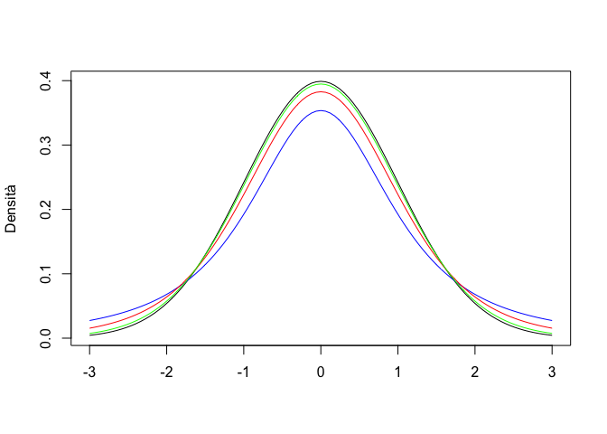
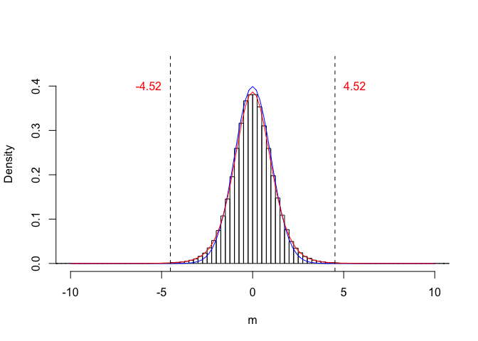
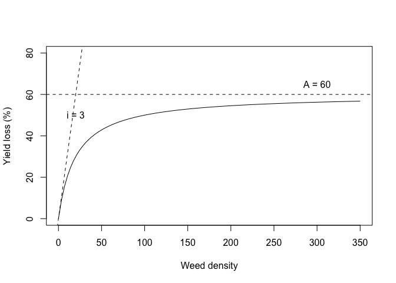

Appendix 3: Per chi vuole approfondire un po’…
[Intro da fare]
Capitolo 3: Progettare un esperimento
Organizzare un esperimento di diserbo chimico
Si suppone che gli erbicidi A, B e C siano più efficaci di D, E ed F verso Solanum nigrum, una comune pianta infestante delle colture di pomodoro. L’obiettivo generale della ricerca sarà quello di trovare un’efficace soluzione per l’eliminazione di Solanum nigrum dal pomodoro. Gli obiettivi specifici saranno:
- valutare l’efficacia erbicida di A, B e C, confrontandola con quella di D, E ed F
- valutare la selettività degli anzidetti erbicidi verso il pomodoro
Il fattore sperimentale oggetto di studio sarà il diserbo del pomodoro, con 5 livelli inseriti in prova (6 trattamenti sperimentali): A, B, C, D, E ed F. Inoltre, si ritiene opportuno inserire in prova un testimone non trattato (NT), che ci permetterà di quantificare la percentuale di malerbe controllate. In totale, avremo quindi sette tesi sperimentali.
Questo esperimento verrà eseguito in vaso e, di conseguenza, potremo realizzare sei repliche con un disegno sperimentale a randomizzazione completa. La variabile rilevata, tre settimane dopo il trattamento, sarà il peso della biomassa presente in ogni vasetto.
Organizzare un esperimento di confronto varietale
L’ipotesi è che le varietà di girasole A, B e C non abbiano la stessa base genetica e quindi non siano tutte ugualmente produttive. L’obiettivo generale è quello di capire quale tra A, B e C sia più adatta alle condizioni pedoclimatiche della collina Umbra. Gli obiettivi specifici sono quelli di valutare:
- produttività di A, B e C
- stabilità produttiva di A, B e C
Il fattore sperimentale in studio sarà la varietà di girasole con 3 livelli inclusi in prova (varietà A, B e C). Come testimone, inseriremo la varietà di riferimento per la zona (D). Dato che eseguiremo questa prova su un terreno nel quale vi sono due chiari gradienti di fertilità, disegneremo l’esperimento considerando due fattori di blocco: trasversale e longitudinale (spiego meglio tra poco…). Poiché dobbiamo valutare la stabilità produttiva, dovremo ripetere l’esperimento più volte (es. in tre anni diversi) e quindi avremo un secondo fattore sperimentale, incrociato con il primo.
Questo esperimento verrà realizzato in pieno campo, su parcelle di dimensioni 2 m x 8 m, seguendo uno schema sperimentale a quadrato latino con quattro repliche. Dovendo misurare la stabilità produttiva, cioè l’oscillazione di produzione da un ambiente all’altro, questa prova dovrà essere ripetuta in più anni (es. tre anni).
Per ognuno degli anni di prova, la mappa contiene una griglia 4 x 4, nella quale possiamo identificare quattro colonne e quattro righe. Dato che abbiamo presupposto l’esistenza di un gradiente trasversale e lungitudinale (tra righe e tra colonne), l’allocazione dei trattamenti dovrà esser fatta in modo che ognuno di essi si trovi su ogni riga e ogni colonna (Quadrato latino). Un’aspetto fondamentale è comunque quello di definire una diversa randomizzazione in ogni anno/località, per evitare che le stesse varietà siano sempre nelle stesse posizioni, che potrebbe dare origine a dubbi di confounding. La definizione delle randomizzazioni per il secondo e terzo anno è lasciata per esercizio.
Anche in questo caso potremo chiedere ad R di aiutarci a trovare la combinazione corretta (anche se questo potrebbe essere comodamente fatto a mano).
library(agricolae)
trt <- c("A", "B", "C", "D")
designLS <- design.lsd(trt, seed=543, serie=2)
designLS$book
## plots row col trt
## 1 101 1 1 C
## 2 102 1 2 A
## 3 103 1 3 B
## 4 104 1 4 D
## 5 201 2 1 D
## 6 202 2 2 B
## 7 203 2 3 C
## 8 204 2 4 A
## 9 301 3 1 B
## 10 302 3 2 D
## 11 303 3 3 A
## 12 304 3 4 C
## 13 401 4 1 A
## 14 402 4 2 C
## 15 403 4 3 D
## 16 404 4 4 B
Figure 15.4: Schema sperimentale a quadrato latino per l’Esempio 2 (un anno)
Un’altro aspetto da considerare è la metodica impiegata per la determinazione del peso di 1000 semi. Abbiamo già visto che, per aumentare la precisione e la rappresentatività, da tutta la granella raccolta da una parcella preleviamo quattro lotti da 1000 semi, di cui determinare il peso. In questo modo, per ogni trattamento avremo 16 valori (quattro repliche x quattro lotti per replica). Ovviamente non possiamo affermare di avere 16 repliche, in quanto solo le parcelle sono da considerare repliche, in quanto ricevono il trattamento (varietà) in modo indipendente. I quattro lotti raccolti da ogni parcella sono unità osservazionali (perché ne viene rilevato il peso), ma non unità sperimentali, perché appartengono alla stessa parcella e non sono indipendenti. I quattro lotti si dicono sub-repliche, quindi il disegno ha quattro repliche e quattro sub-repliche per replica (disegno a quadrato latino con sottocampionamento). I due strati di errore (variabilità tra repliche e variabilità tra sub-repliche entro replica), devono essere mantenuti separati in fase di analisi, altrimenti l’analisi è invalida, perché è condotta come se avessimo un più alto grado di precisione (16 repliche) rispetto a quello che abbiamo effettivamente (una sorta di millantato credito!).
[Inserire immagine]
Al termine del ciclo colturale, si misurerà il peso di mille semi. Per questo, prenderemo dalla produzione di granella di ogni parcella, quattro sub-campioni da mille semi, da sottoporre a pesate.
Organizzare un esperimento fattoriale
Nella barbabietola da zucchero, il diserbo localizzato lungo la fila consente di diminuire l’impiego di erbicidi. Tuttavia, se la coltura precedente ha prodotto semi e se non abbiamo effettuato una lavorazione profonda per interrarli, la coltura sarà più infestata e quindi sarà più difficile ottenere una buona produttività con il diserbo parziale. Su questa ipotesi costruiamo un esperimento volto a valutare l’interazione tra lavorazione del terreno e diserbo chimico. Per raggiungere questo obiettivo generale, proveremo a valutare se:
- il diserbo parziale consente di ottenere produzioni comparabili a quelle del diserbo totale
- l’effetto erbicida è indipendente dalla lavorazione prescelta
In questo caso avremo due fattori sperimentali incrociati: il diserbo, con due livelli (totale o parziale, localizzato sulla fila) e la lavorazione, con tre livelli (aratura profonda, aratura superficiale e minimum tillage). Non vi è la necessità di un testimone, ma avremo la necessità di un fattore di blocco. In totale, avremo sei tesi sperimentali.
In questo caso abbiamo un disegno fattoriale con due livelli a blocchi randomizzati. Nel principio, questo disegno non ha nulla di diverso da quello relativo all’esempio 1, fatto salvo un minor numero di trattamenti (solo 6). Anche in questo caso, ci facciamo aiutare da R.
trt <- c(3,2) # factorial 3x2
design2way <-design.ab(trt, r=4, serie=2,
design="rcbd", seed=777)
book <- design2way$book
levels(book$A) <- c("PROF", "SUP", "MIN")
levels(book$B) <- c("TOT", "PARZ")
book
## plots block A B
## 1 101 1 SUP PARZ
## 2 102 1 PROF PARZ
## 3 103 1 PROF TOT
## 4 104 1 MIN TOT
## 5 105 1 SUP TOT
## 6 106 1 MIN PARZ
## 7 107 2 MIN TOT
## 8 108 2 SUP TOT
## 9 109 2 MIN PARZ
## 10 110 2 PROF TOT
## 11 111 2 SUP PARZ
## 12 112 2 PROF PARZ
## 13 113 3 MIN TOT
## 14 114 3 SUP TOT
## 15 115 3 PROF PARZ
## 16 116 3 MIN PARZ
## 17 117 3 SUP PARZ
## 18 118 3 PROF TOT
## 19 119 4 MIN PARZ
## 20 120 4 PROF TOT
## 21 121 4 PROF PARZ
## 22 122 4 MIN TOT
## 23 123 4 SUP TOT
## 24 124 4 SUP PARZLa mappa risultante è visibile più sotto.

Figure 15.5: Schema sperimentale fattoriale a blocchi randomizzati per l’Esempio 3
Questo disegno è totalmente appropriato, ma ci costringe a lasciare parecchio spazio tra una parcella e l’altra, per poter manovrare con la macchina per la lavorazione del terreno. Sarebbe utile raggruppare le parcelle caratterizzate dalla stessa lavorazione, in modo da poter lavorare su superfici più ampie. Ne guadagnerebbe l’uniformità dell’esperimento e l’accuratezza dei risultati. Possiamo quindi immaginare un disegno a un fattore, con parcelle di dimensione doppia (main-plots), sulle quali eseguire, in modo randomizzato le lavorazioni del terreno. Succesivamente, ogni main-plot può essere suddivisa in due e, su ognuna delle due metà, possono essere allocati in modo random i due trattamenti di diserbo. In questo modo ci troviamo ad operare con parcelle di due dimensioni diverse: le main-plots per le lavorazioni e le sub-plots per il diserbo. Questo tipo di schema prende il nome di parcella suddivisa (split-plot), ed è piuttosto comune nella sperimentazione di pieno campo.
Proviamo ad utilizzare R per redigere il piano sperimentale.
lavorazione <- c("PROF", "SUP", "MIN")
diserbo <- c("TOT", "PARZ")
designSPLIT <- design.split(lavorazione, diserbo,
r=4, serie=2, seed=777)
book <- designSPLIT$book
book
## plots splots block lavorazione diserbo
## 1 101 1 1 SUP PARZ
## 2 101 2 1 SUP TOT
## 3 102 1 1 PROF TOT
## 4 102 2 1 PROF PARZ
## 5 103 1 1 MIN PARZ
## 6 103 2 1 MIN TOT
## 7 104 1 2 SUP PARZ
## 8 104 2 2 SUP TOT
## 9 105 1 2 MIN TOT
## 10 105 2 2 MIN PARZ
## 11 106 1 2 PROF TOT
## 12 106 2 2 PROF PARZ
## 13 107 1 3 MIN TOT
## 14 107 2 3 MIN PARZ
## 15 108 1 3 SUP TOT
## 16 108 2 3 SUP PARZ
## 17 109 1 3 PROF TOT
## 18 109 2 3 PROF PARZ
## 19 110 1 4 PROF PARZ
## 20 110 2 4 PROF TOT
## 21 111 1 4 MIN TOT
## 22 111 2 4 MIN PARZ
## 23 112 1 4 SUP PARZ
## 24 112 2 4 SUP TOT
Figure 15.6: Schema sperimentale split-plot a blocchi randomizzati per l’Esempio 3
In alcune circostanze, soprattutto nelle prove di diserbo chimico, potrebbe trovare applicazione un altro tipo di schema sperimentale, nel quale, in ogni blocco, un trattamento viene applicato a tutte le parcelle di una riga e l’altro trattamento a tutte le parcelle di una colonna. Ad esempio, il disegno sottostante mostra una prova nella quale il terreno è stato diserbato in una striscia nel senso della lunghezza e, dopo il diserbo, le colture sono state seminate in striscia, nel senso della larghezza. Questo disegno è detto strip-plot ed è molto comodo perché consente di lavorare velocemente.

Figure 15.7: Schema sperimentale a strip-plot
Organizzare un esperimento con una coltura poliennale
Vogliamo porre a confronto tre varietà di erba medica (A, B e C) e, considerando che l’erba medica è una coltura poliennale, vogliamo capire se il giudizio di merito è indipendente dall’anno di coltivazione. I nostri obiettivi specifici saranno:
- valutare la produttività media delle varietà in prova
- valutare le oscillazione nei quattro anni di durata del cotico erboso
Il fattore sperimentale in studio sarà la varietà di erba medica con 3 livelli inclusi in prova (varietà A, B e C) ai quali aggiungiamo il riferimento di zona (D) come testimone. Come nel caso del girasole, dovremo valutare la stabilità produttiva negli anni, ma, dato che abbiamo una coltura poliennale, non avremo bisogno di ripetere la prova, ma potremo ripetere le osservazioni per quattro anni sulla stessa prova.
La prova di erba medica è fondamentalmente un esperimento a blocchi randomizzati, il cui piano è riportato più sotto. Tuttavia, si tratta di una coltura poiliennale nella quale ripeteremo le misurazioni ogni anno sulle stesse parcelle. le misure ripetute non sono randomizzate (non possono esserlo), ma seguono una metrica temporale. Proprio per questo sviluppo lungo la scala del tempo, i dati che si raccolgono in questi esperimenti a misure ripetute sono detti dati longitudinali. Guardando bene il disegno si capisce anche per si parla di split-plot nel tempo. Esempi affini sono relativi all’analisi di accrescimento con misure non distruttive (esempio l’altezza) oppure i prelievi di terreno a profondità diverse, anche se, in quest’ultimo caso, la metrica delle misure ripetute è spaziale, non temporale.
Si può notare una certa analogia con il sottocampionamento illustrato più sopra, nel senso che vengono prese più misure per parcella. Tuttavia, bisogna tener presente che nel sottocampionamento le diverse misure sono solo repliche e non vi è nessuna esigenza di distinguere tra quelle prese nella stessa parcella. Invece, nel caso delle misure ripetute ognuna di esse ha interesse individuale, in quanto espressione di un’anno particolare.

Figure 15.8: Schema sperimentale a blocchi randomizzati con misure ripetute (split-plot in time)
Utilizzare R per disegnare gli esperimenti
Negli esperimenti più semplici lo schema sperimentale può essere pianificato a mano. Per esperimenti complessi potremo invece utilizzare il computer; in R, potremo utilizzare, ad esempio, il package agricolae (de Mendiburu 2019), seguento il codice che troverete nei paragrafi seguenti.
[Spostare qui gli esempi, lasciando sopra gli schemi]
Capitolo 4: Modelli matematici a ‘due facce’
La distribuzione t di Student
La distribuzione t di Student è analoga per forma ad una distribuzione normale con media 0 e deviazione standard 1. Rispetto a questa, la dispersione è un po’ più ampia, nel senso la probabilità di avere valori lontani dalla media è più alta. In realtà, non esiste una sola distribuzione t di Student, ma ne esistono molte, caratterizzate da un diverso numero di gradi di libertà (\(\nu\)); maggiore è \(\nu\), minore la sovradispersione; se il numero di gradi di libertà è infinito, la distribuzione t di Student è identica alla normale standardizzata (distribuzione normale con media 0 e deviazione standard uguale ad 1).
Per verificare l’entità della sovradispersione, proviamo a disegnare su un grafico una curva normale standardizzata ed una serie di curve di t, con 2, 6 e 24 gradi di libertà.
par(mfrow = c(1, 1))
curve(dnorm(x),-3, +3, col="Black", xlab="",
ylab="Densità")
curve(dt(x, 2), add=TRUE, col = "blue")
curve(dt(x,6), add=TRUE, col = "red")
curve(dt(x,24), add=TRUE, col = "green")
La distribuzione F di Fisher
La distribuzione F di Fisher è definita solo per valori positivi ed è fortemente asimmetrica. Anche in questo caso, abbiamo una famiglia di distribuzioni, che differiscono tra di loro per due parametri (gradi di libertà) \(\nu_1\) e \(\nu_2\). Solitamente questa distribuzione viene utilizzata per descrivere il rapporto tra le varianze di coppie di campioni estratti da un distribuzione normale standardizzata, per cui \(\nu_1\) e \(\nu_2\) sono i gradi di libertà del numeratore e del denominatore.
Col codice che segue, possiamo disegnare la distribuzione di F con \(\nu_1 = \nu_2 = 3\) e possiamo calcolare la probabilità di estrarre da questa distribuzione un valore pari o superiore a 5. Inoltre, calcoliamo anche il 95° percentile, utilizzando le apposite funzioni in R.
curve(df(x, 3, 3), 0, +3,col="Black",
xlab="", ylab="Densità")pf(5, 3, 3, lower.tail = F)
## [1] 0.109551
qf(0.95, 3, 3)
## [1] 9.276628La distribuzione binomiale
Ogni esperimento per il quale ci sono solo due esiti possibili (successo ed insuccesso) e una certa probabilità di successo, viene detto esperimento Bernoulliano. Il tipico esempio è il lancio della moneta, nel quale possiamo ottenere solo testa o croce, con una probabilità di 0.5 (se la moneta non è truccata). In alcuni casi, potremmo avere una serie di esperimenti Bernoulliani indipendenti, con probabilità di successo costante (ad esempio, lanciare la moneta 10 volte) e potremmo essere interessati a conoscere la probabilità di ottenere k successi su n prove. Questa probabilità può essere descritta attraverso la funzione di probabilità binomiale.
Poniamo di sapere che in una Facoltà di Agraria con un numero molto elevato di studenti il rapporto tra maschi e femmine sia pari a 0.7 e quindi che la probabilità di incontrare un maschio sia pari a \(p = 0.7\) (evento semplice). Deve essere estratto a sorte un viaggio studio per quattro studenti e, per una questione di pari opportunità, si preferirebbe che fossero premiati in ugual misura maschi e femmine (cioè si vogliono premiare due femmine). Qual è la probabilità che un simile evento si realizzi?
La probabilità cercata si può ottenere pensando che abbiamo un evento “estrazione” che può dare due risultati possibili (maschio o femmina) e che deve essere ripetuto quattro volte. Se consideriamo “successo” estrarre una femmina, allora la probabilità di successo in ogni estrazione è \(p = 0.3\) mentre quella di insuccesso (evento complementare) è pari a \(1 - p = q = 0.7\). Facciamo attenzione! Quanto abbiamo detto è vero solo se la popolazione è sufficientemente numerosa da pensare che la singola estrazione non cambia la probabilità degli eventi nelle successive (eventi indipendenti). La probabilità che su quattro estrazioni si abbiano 2 successi (due femmine) e due insuccessi (due maschi) è data da (teorema della probabilità composta):
\[0.3 \cdot 0.3 \cdot 0.7 \cdot 0.7 = 0.3^2 \cdot 0.7^2\]
In generale, data una popolazione molto numerosa, nella quale gli individui si presentano con due modalità possibili (in questo caso maschio e femmina) e posto di sapere che la frequenza con cui si presenta la prima modalità è pari a \(p\) (in questo caso la frequenza delle femmine è pari a 0.3), mentre la frequenza della seconda modalità è pari a \(q = 1 - p\), se vogliamo estrarre da questa popolazione \(n\) elementi, la probabilità che \(k\) di questi presentino la prima modalità (successo) è data da:
\[p^k \cdot q^{(n-k)}\]
La formula di cui sopra, tuttavia, non risolve il nostro problema, in quanto noi vogliamo che vengano estratte due femmine, indipendentemente dall’ordine con cui esse vengono estratte (prima, seconda, terza o quarta estrazione), mentre la probabilità che abbiamo appena calcolato è quella relativa all’evento in cui le due femmine sono estratte al primo e secondo posto.
Di conseguenza (teorema della probabilità totale) alla probabilità dell’evento indicato in precedenza (estrazione di due femmine in prima e seconda posizione) dobbiamo sommare la probabilità di tutti gli altri eventi utili (due femmine in seconda e terza posizione, oppure in terza e seconda, oppure in terza e quarta e così via). Il numero delle combinazioni possibili per 2 femmine in quattro estrazioni (combinazione di 4 elementi di classe 2) è dato dal coefficiente binomiale:
\[\left( {\begin{array}{*{20}c} n \\ k \\ \end{array}} \right) = \frac{n!}{(n - k)!k!} \]
Moltiplicando le due equazioni date in precedenza otteniamo la funzione di probabilità binomiale:
\[P(X = x_i ) = \frac{{n!}}{{(n - k)!k!}} \cdot p^k \cdot q^{(n - k)} \]
Nel caso specifico otteniamo il risultato:
\[P(X = 2) = \frac{4!}{(4 - 2)!2!} \cdot 0.3^2 \cdot 0.7^{(4 - 2)} = 0.2646 \]
che è appunto la probabilità cercata.
In R, utilizziamo la funzione ‘dbinom(successi, prove, probabilità semplice)’ per calcolare la probabilità di ottenere \(k\) successi in \(n\) prove:
dbinom(2, 4, 0.3)
## [1] 0.2646La funzione binomiale è un modello stocastico e si può dimostrare che il valore atteso (media) è uguale ad \(n\cdot p\), mentre la varianza è pari a \(n\cdot p \cdot q\):
La funzione di ripartizione (probabilità cumulata) si calcola in R con la funzione ‘pbinom(successi, prove, probabilità semplice)’. Nell’esempio, se vogliamo sapere la probabilità totale di estrarre meno di tre femmine (2 femmine o meno), possiamo operare in questo modo:
pbinom(2,4,0.3)
## [1] 0.9163Che risulta anche dalla somma della probabilità di estrarre 0, 1, 2 femmine:
zero <- dbinom(0,4,0.3)
uno <- dbinom(1,4,0.3)
due <- dbinom(2,4,0.3)
zero + uno + due
## [1] 0.9163La funzione di ripartizione può anche essere utilizzata al contrario, per determinare i quantili, cioè il numero di successi che corrispondono ad una probabilità cumulata pari ad alfa:
qbinom(0.9163,4,0.3)
## [1] 2Esercizio
Da una popolazione di insetti che ha un rapporto tra maschi e femmine pari a 0.5, qual è la probabilità di campionare casualmente 2 maschi e 8 femmine?
dbinom(2, 10, 0.5)
## [1] 0.04394531Esercizio
Riportare su un grafico la funzione di ripartizione binomiale, per p=0.5 e n=5. Costruire anche la densità di frequenza, utilizzando le opportune funzioni R.
prob <- 0.5
n <- 5
barplot(dbinom(seq(0, n, by=1), size=n, prob=prob),
xlab="Successi", ylab="Probabilità",
names.arg=seq(0,5))
Figure 15.9: Distribuzione di probabilità binomiale (sinistra) e probabilità binomiale cumulata (destra)
barplot(pbinom(seq(0, n, by=1), size=n, prob=prob),
xlab="Successi", ylab="Probabilità",
names.arg=seq(0,5))Figure 15.9: Distribuzione di probabilità binomiale (sinistra) e probabilità binomiale cumulata (destra)
Allo stesso modo possiamo immaginare di estrarre 20 insetti a caso da una popolazione in cui il rapporto tra i sessi è 1:1. Questo esperimento può essere simulato con:
Y <- rbinom(1, size = 20, prob = 0.5)
Y
## [1] 10Assumendo che il ‘successo’ sia ottenere una femmina, il computer ci restituisce il numero delle femmine.
Capitolo 5: Esperimenti stime ed incertezza
E’ realistico l’intervallo di confidenza?
Abbiamo visto che un metodo semplice per costruire un intervallo di confidenza è utilizzare il doppio dell’errore standard. Questo intervallo, se viene utilizzato come misura di precisione/incertezza, è sempre accettabile. Tuttavia, da un punto di vista strettamente probabilistico, è lecito chiedersi: ma è proprio vero che se io ripeto l’esperimento molte volte e calcolo sempre l’intervallo di confidenza, riesco a centrare la media \(\mu\) nel 95% dei casi?
Proviamo a rispondere a questa domanda con una simulazione Monte Carlo. Prendiamo la nostra popolazione (\(\mu = 120\) e \(\sigma = 12\)) ed estraiamo centomila campioni. Per ogni campione calcoliamo l’intervallo di confidenza della media (P = 0.95) considerando il doppio dell’errore standard. Verifichiamo poi se questo intervallo contiene il valore 120: se si, assegniamo al campionamento il valore 1 (successo), altrimenti assegniamo il valore 0.
result <- rep(0, 100000)
set.seed(1234)
for (i in 1:100000){
sample <- rnorm(3, 120, 12)
limInf<- mean(sample) - sd(sample)/sqrt(3) * 2
limSup<- mean(sample) + sd(sample)/sqrt(3) * 2
if (limInf<= 120 & limSup>= 120) result[i] = 1
}
sum(result)/100000
## [1] 0.81656La simulazione mostra che la risposta alla domanda precedente è no: il nostro intervallo di confidenza non è riuscito a centrare la media nel 95% dei casi; ciò è avvenuto in poco più dell’80% dei casi. In realtà, possiamo facilmente verificare, con altre simulazioni di Monte Carlo, che la copertura effettiva dell’intervallo di confidenza si avvicina al 95% solo se abbiamo un numero di repliche superiori a 15-20 circa.
result <- rep(0, 100000)
set.seed(1234)
for (i in 1:100000){
n <- 15
sample <- rnorm(n, 120, 12)
limInf<- mean(sample) - sd(sample)/sqrt(n) * 2
limSup<- mean(sample) + sd(sample)/sqrt(n) * 2
if (limInf<= 120 & limSup>= 120) result[i] = 1
}
sum(result)/100000
## [1] 0.93591Insomma, quando gli esperimenti sono piccoli, con poche repliche, dovremmo trovare un metodo di calcolo un po’ più affidabile, se veramente vogliamo ottenere un grado di copertura pari a quello nominale (P = 0.95).
Il problema nasce dal fatto che, nella statistica T che abbiamo introdotto nel capitolo 5:
\[T = \frac{m - \mu}{\sigma_m}\] \(\sigma_m\) viene sostituito con \(s_m\), cioè il valore di deviazione standard stimato nel campione. Come tutte le stime, anche \(s\) è ’soggetto ad incertezza, il che aggiunge un elemento ulteriore di imprecisione nella sampling distribution di T. Insomma ci chiediamo, la sampling distribution di T, calcolata con \(s\) invece che \(\sigma\) è ancora normale? Verifichiamo questo aspetto empiricamente, con una nuova simulazione Monte Carlo. Questa volta facciamo la seguente operazione:
- campioniamo tre individui
- Calcoliamo il valore di T con la statistica precedente, utilizzando la deviazione standard del campione e lo salviamo
- Con un po’ di pazienza, ripetiamo il tutto 100’000 volte.
#SIMULAZIONE MONTE CARLO - t di Student
set.seed(435)
result <- c()
for (i in 1:100000){
sample3 <- rnorm(3, 120, 12)
Ti <- (mean(sample3) - 120) / (sd(sample3)/sqrt(3))
result[i] <- Ti
}Se riportiamo i valori ottenuti su una distribuzione di frequenze otteniamo il grafico sottostante.
#Plot sampling distribution
b <- seq(-600, 600, by=0.2)
hist(result, breaks = b, freq=F, xlab = expression(paste(m)), ylab="Density", xlim=c(-10,10), ylim=c(0,0.4), main="")
curve(dnorm(x, 0, 1), add=TRUE, col="blue")
curve(dt(x, 2), add=TRUE, col="red")Vediamo che la sampling distribution di T calcolato utilizzando \(s\) invece che \(\sigma\) è solo approssimativamente normale. E’ facile vedere che questa approssimazione è sufficientemente buona solo se la numerosità del campione diviene abbastanza grande (es. \(n > 30)\), ma non certamente quando \(n\) = 3 (ve lo lascio per esercizio). In questo caso, la sampling distribution che osserviamo è più ‘dispersa’ di quella normale, con un maggior numero di valori sulle code.
Neyman scoprì che la sampling distribution di T poteva essere perfettamente descritta utilizzando la distribuzione t di Student, con un numero di gradi di libertà pari a quelli del campione (in questo caso 2), come vediamo nella figura sovrastante. In realtà questa conclusione era stata già raggiunta da William Sealy Gosset (1876 - 1937), uno statistico impiegato presso la fabbrica londinese della famosa birra Guinness, dove elaborava i dati relativi all’andamento del processo di maltazione. Egli, avendo definito questa nuova funzione di densità, per aggirare il divieto di pubblicazione imposto dal suo datore di lavoro, pubblicò i risultati sotto lo pseudonimo Student, da cui deriva il nome della distribuzione di densità.
Quindi, quando i campioni sono piccoli, il modo giusto di calcolare l’intervallo di confidenza è quello di utilizzare l’espressione seguente:
\[P \left( m + \textrm{qt}(0.025,n - 1) \cdot s_m \le \mu \le m + \textrm{qt}(0.975,n - 1) \cdot s_m \right) = 0.95\]
dove \(\textrm{qt}(0.025,n - 1)\) e \(\textrm{qt}(0.975,n - 1)\) sono rispettivamente il 2.5-esimo e il 97.5-esimo percentile della distribuzione t di Student, con n-1 gradi di libertà.
Nel capitolo 5 abbiamo utilizzato un esempio in cui abbiamo eseguito tre analisi chimiche da una soluzione erbicida di concentrazione pari a 120 mg/l, con uno strumento caratterizzato da un coefficiente di variabilità del 10%, che quindi, in assenza di errori sistematici, produce misure distribuite normalmente con media uguale a 120 e deviazione standard uguale a 12. Il campione osservato era
set.seed(1234)
Y <- rnorm(3, 120, 12)
Y
## [1] 125.1584 114.7349 105.6998le statistiche descrittive sono:
m <- mean(Y)
s <- sd(Y)
m; s
## [1] 115.1977
## [1] 9.737554I valori della distribuzione t di Student che lasciano al loro esterno il 5% delle varianti (2.5% per coda) sono:
qt(0.025, 2)
## [1] -4.302653
qt(0.975, 2)
## [1] 4.302653Gli intervalli di confidenza sono pertanto:
m + qt(0.025, 2) * s/sqrt(3)
## [1] 91.00824
m + qt(0.975, 2) * s/sqrt(3)
## [1] 139.3871E’ facile osservare che, se l’intervallo di confidenza è calcolato in questo modo, il suo coverage3 Operiamo con una simulazione Monte Carlo analoga a quella utilizzata nel capitolo 5.
result <- rep(0, 100000)
set.seed(1234)
for (i in 1:100000){
sample <- rnorm(3, 120, 12)
limInf<- mean(sample) + sd(sample)/sqrt(3) * qt(0.025, 2)
limSup<- mean(sample) + sd(sample)/sqrt(3) * qt(0.975, 2)
if (limInf<= 120 & limSup>= 120) result[i] = 1
}
sum(result)/100000
## [1] 0.94992Ovviamente possiamo calcolare anche gli intervalli di confidenza al 99% di proababilità o qualunque altro intervallo di confidenza rilevante per il nostro studio.
Che cosa NON significa l’intervallo di confidenza?
Abbiamo già detto che l’intervallo di confidenza, calcolato su una serie di campionamenti ripetuti, contiene al suo interno la media vera e ignota della popolazione (\(\mu\)) con una probabilità pari a 0.95.
Tuttavia, la formula di Neyman si presta a cattive letture, che sono insensate da un punto di vista probabilistico, ma tuttavia molto frequenti nella pratica operativa. Ad esempio:
- NON E’ VERO CHE: c’è il 95% di probabilità che la media ‘vera’ della popolazione si trovi tra 91.0082383 e 139.3870891. La media vera della popolazione è sempre fissa e pari a 120 e non cambia affatto tra un campionamento e l’altro.
- NON E’ VERO CHE: ripetendo l’esperimento, il 95% delle stime che otteniamo cadono nell’intervallo 91.0082383 e 139.3870891. Una semplice simulazione mostra che quasi tutte le medie campionate cadono in quell’intervallo:
result <- rep(0, 100000)
set.seed(1234)
for (i in 1:100000){
sample <- rnorm(3, 120, 12)
if (mean(sample) <= 156.15 & mean(sample) >= 92.13) result[i] = 1
}
sum(result)/100000
## [1] 0.99996- NON E’ VERO CHE: c’è il 95% di probabilità che l’affermazione ’la media vera è compresa tra 91.0082383 e 139.3870891 sia vera. Nelle normali condizioni sperimentali la media vera è ignota e non sapremo mai nulla su di essa: il nostro intervallo di confidenza può catturarla o no. Nel nostro esempio lo ha fatto, ed è tutto quello che possiamo dire.
Insomma, l’intervallo di confidenza vale per la sampling distribution e non vale per ogni singolo campionamento (esperimento). Pertanto, affermazioni del tipo: ”c’è il 95% di probabilità che \(\mu\) è compreso nell’intervallo di confidenza” oppure ”il valor più probabile di \(\mu\) è…” non sono corrette e anzi non hanno senso nella statistica tradizionale.
In altre parole, l’intervallo di confidenza è una sorta di polizza assicurativa che ci garantisce che, se operiamo continuativamente con le procedure indicate, al termine della nostra carriera avremo sbagliato in non più del 5% dei casi.
Popolazioni non gaussiane
Nel capitolo 5 abbiamo presentato un esempio in cui avevamo campionato da una distribuzione normale, riscontrando una sampling distribution per la media campionaria anch’essa normale. Ma che succede se la distribuzione di partenza è non-normale? La sampling distribution di uno stimatore è ancora normale? Vediamo un nuovo esempio.
Immaginiamo di avere 4’000’000 di semi ben mischiati (in modo che non ci siano raggruppamenti non casuali di qualche tipo), che costituiscono la nostra popolazione di partenza. Vogliamo appurare la frequenza relativa (p) dei semi dormienti. Questa informazione, nella realtà, esiste (\(\pi\) = 0.25), ma non è nota.
Dato l’elevato numero di ‘soggetti’, non possiamo testare la germinabilità di tutti i semi, ma dobbiamo necessariamente prelevare un campione casuale di 40 soggetti; ogni seme viene saggiato e, dato che la popolazione è molto numerosa, l’estrazione di un seme non modifica sensibilmente la proporzione di quelli dormienti nella popolazione (esperimenti indipendenti).
Il modello dei dati
Dopo aver descritto la popolazione e l’esperimento, ci chiediamo quale sia il modello matematico che genera i nostri dati (numero di successi su 40 semi estratti). Il disegno sperimentale ci assicura che ogni estrazione è totalmente indipendente dalla precedente e dalla successiva ed ha due soli risultati possibili, cioè successo (seme dormiente), o insuccesso (seme germinabile). Di conseguenza, ogni singola estrazione si configura come un esperimento Bernoulliano, con probabilità di successo pari a \(\pi\), il cui valore ‘vero’ esiste, è fisso, pre-determinato (esiste ancor prima di organizzare l’esperimento), anche se incognito e inconoscibile, a meno di non voler/poter esaminare tutti i semi disponibili. L’insieme delle 40 estrazioni (40 esperimenti Bernoulliani) può produrre un ventaglio di risultati possibili, da 40 successi a 40 insuccessi, per un totale di 41 possibili ‘outcomes’.
E’ evidente che i 41 possibili risultati non sono ugualmente probabili e si può dimostrare che la probabilità di ottenere k successi (con k che va da 0 ad n; n è al numero delle estrazioni) dipende da \(\pi\) ed è descrivibile matematicamente con la distribuzione binomiale \(\phi\):
\[\phi(k, n, p) = \frac{n!}{(n-k)!k!} p^k (1 - p)^{(n-k)}\]
Abbiamo quindi definito il modello matematico che descrive la probabilità di tutti i possibili risultati del nostro esperimento e quindi può in qualche modo essere considerato il ‘meccanismo’ che ‘genera’ i dati sperimentali osservati. Si tratta di un meccanismo puramente ‘stocastico’ nel quale è solo il caso che, attraverso il campionamento, determina il risultato dell’esperimento.
Con queste informazioni, possiamo simulare un esperimento con R, ottenendo i seguenti risultati:
set.seed(23456789)
rbinom(1, 40, 0.25)
## [1] 10Abbiamo ottenuto 9 successi su 40, cioè 9 semi dormienti su 40 saggiati.
Stima dei parametri
Dovendo stimare la quantità \(\pi\), la statistica tradizionale trascura totalmente le nostre aspettative sul fenomeno e utilizza soltanto i risultati dell’esperimento. Chiamiamo p la quantità stimata e, dato che abbiamo contato nove semi dormienti, concludiamo che p = 0.225, in quanto questa, con le informazioni che abbiamo, è la cosa più verosimile. Anche in questo caso vi è chiara discrasia tra la verità ‘vera’ e l’osservazione sperimentale (tra \(\pi\) e \(p\)).
Sampling distribution
Cosa succede se ripetiamo l’esperimento? Come abbiamo imparato a fare, possiamo cercare una risposta attraverso la simulazione Monte Carlo, ricorrendo ad un generatore di numeri casuali da una distribuzione binomiale con n = 40 e \(\pi\) = 0.25 (in R si usa la funzione ‘rbinom(numeroDatiCasuali, n, p)’). Il codice è più semplice, in quanto non è necessario impostare un ciclo iterativo:
set.seed(1234)
result <- rbinom(10000000, 40, 0.25)Esploriamo i risultati ottenuti:
result_p <- result/40
mean(result_p)
## [1] 0.2500129
sd(result_p)
## [1] 0.0684611Osserviamo subito che, anche se i singoli esperimenti portano a stime diverse da \(\pi\), la media di \(p\) tende ad essere uguale a \(\pi\). L’errore standard (deviazione standard della sampling distribution) è 0.0685. Fino a qui, non vie è nulla di diverso dall’esempio precedente, se teniamo presente che la deviazione standard della popolazione originale (che è binomiale) è pari a \(\sqrt{p \times (1 - p)}\), quindi l’errore standard è \(\sqrt{0.25 \times 0.75 / 40} = 0.0685\).
Rimane da stabilire se la sampling distribution di \(p\) è normale. Possiamo utilizzare i 10’000’000 di valori ottenuti per costruire una distribuzione empirica di frequenze, come nel codice sottostante.
breaks <- seq(0, 0.7, by=0.025)
freqAss <- as.numeric( table(cut(result_p, breaks) ) )
freqRel <- freqAss/length(result_p)
density <- freqRel/0.025
p_oss <- breaks[2:length(breaks)]
plot(density ~ p_oss, type = "h",
xlab = expression(paste(bar(p))),
ylab="Density",
main="Sampling distribution per p",
xlim=c(0,0.6) )
curve(dnorm(x, 0.25, 0.0685), add=TRUE, col="red")Vediamo che sampling distribution è approssimativamente normale con media pari a 0.25 e deviazione standard pari a 0.0685. Lo percepiamo chiaramente dal grafico soprastante, ma c’è una spiegazione scientifica per questo, basata sul TEOREMA DEL LIMITE CENTRALE:
- La sampling distribution di una statistica ottenuta da campioni casuali e indipendenti è approssimativamente normale, indipendentemente dalla distribuzione della popolazione da cui i campioni sono stati estratti.
- La media della sampling distribution è uguale al valore della statistica calcolata sulla popolazione originale, la deviazione standard della sampling distribution (errore standard) è pari alla deviazione standard della popolazione originale divisa per la radice quadrata della numerosità di un campione.
Capitolo 6. Introduzione al test d’ipotesi
Simulazione Monte Carlo di un test t di Student
La sampling distribution per T potrebbe essere ottenuta empiricamente, utilizzando una simulazione MONTE CARLO ed immaginando di estrarre numerose coppie di campioni, dalla stessa distribuzione normale, analogamente a quanto abbiamo fatto nell’esempio precedente. Se l’ipotesi nulla è vera, possiamo immaginare che questa distribuzione gaussiana abbia una media pari a (70.2 + 85.4)/2 = 77.8 e una deviazione standard pari alla deviazione standard delle dieci osservazioni (tutte insieme, senza distinzioni di trattamento), cioè 5.71.
Il codice da utilizzare in R per le simulazioni è il seguente:
A <- c(65, 68, 69, 71, 78)
P <- c(80, 81, 84, 88, 94)
media <- mean(c(A, P))
devSt <- sd(c(A, P))
set.seed(1234)
result <- rep(0, 100000)
for (i in 1:100000){
sample1 <- rnorm(5, media, devSt)
sample2 <- rnorm(5, media, devSt)
SED <- sqrt( (sd(sample1)/sqrt(5))^2 +
(sd(sample2)/sqrt(5))^2 )
result[i] <- (mean(sample1) - mean(sample2)) / SED
}I risultati delle 100’000 simulazioni sono riportati nel grafico sottostante. Possiamo notare che, dei 100’000 valori di T osservati assumendo vera l’ipotesi nulla, solo l’un per mille sono superiori a quello da noi osservato e altrettanti sono inferiori a -4.5217. In totale, la probabilità di osservare un valore di T così alto in valore assoluto e dello 0.21 %.
SED_obs <- sqrt( (sd(A)/sqrt(5))^2 +
(sd(P)/sqrt(5))^2 )
T_obs <- (mean(A) - mean(P))/SED_obs
(length(result[result < T_obs]) +
length(result[result > - T_obs])) /100000
## [1] 0.00164#Codice Grafico
b <- seq(-12, 12, by=0.25)
hist(result, breaks = b, freq=F, xlab = expression(paste(m)), ylab="Density", xlim=c(-10,10), ylim=c(0,0.45), main="")
curve(dnorm(x), add=T, col="blue")
curve(dt(x, 8), add=T, col="red")
abline(v = 4.52, lty = 2)
abline(v = -4.52, lty = 2)
text(5, 0.4, label="4.52", adj=0, col = "red")
text(-5, 0.4, label="-4.52", adj=1, col = "red")
Tipologie alternative di test t di Student
Il test t può essere di tre tipi:
- Appaiato. In questo caso le misure sono prese a coppia sullo stesso soggetto e non sono quindi indipendenti.
- Omoscedastico. Le misure sono prese su soggetti diversi (indipendenti) e possiamo suppore che i due campioni provengano da due popolazioni con la stessa varianza.
- Eteroscedastico. Le misure sono prese su soggetti diversi, ma le varianze non sono omogenee.
Nel nostro esempio vediamo che le varianze dei campioni sono piuttosto simili e quindi adottiamo un test t omoscedastico (‘var.equal = T’).
Se dovessimo supporre che i due campioni provengono da popolazioni con varianze diverse, allora si porrebbe il problema di stabilire il numero di gradi di libertà del SEM. Abbiamo visto che se le varianze dei due campioni sono uguali (o meglio, sono due stime della stessa varianza), la varianza della somma/differenza ha un ha un numero di gradi di libertà pari alla somma dei gradi di libertà delle due varianze. Se le varianze fossero diverse, il numero di gradi di libertà della loro combinazione lineare (somma o differenza) si dovrebbe approssimare con la formula di Satterthwaite:
\[DF_s \simeq \frac{ \left( s^2_1 + s^2_2 \right)^2 }{ \frac{(s^2_1)^2}{DF_1} + \frac{(s^2_2)^2}{DF_2} }\]
Vediamo che se le varianze e i gradi di libertà sono uguali, la formula precedente riduce a:
\[DF_s = 2 \times DF\]
Nel nostro caso, se fosse \(s^2_1 \neq s^2_2\) avremmo un numero frazionario di gradi di libertà:
dfS <- (var(A) + var(P))^2 /
((var(A)^2)/4 + (var(P)^2)/4)
dfS
## [1] 7.79772Il risultato può essere riscontrato con:
t.test(A, P, var.equal=F)
##
## Welch Two Sample t-test
##
## data: A and P
## t = -4.5217, df = 7.7977, p-value = 0.002076
## alternative hypothesis: true difference in means is not equal to 0
## 95 percent confidence interval:
## -22.986884 -7.413116
## sample estimates:
## mean of x mean of y
## 70.2 85.4Se invece avessimo rilevato le misure accoppiate su quattro individui avremmo solo 4 gradi di libertà:
t.test(A, P, var.equal=T, paired=T)
##
## Paired t-test
##
## data: A and P
## t = -22.915, df = 4, p-value = 2.149e-05
## alternative hypothesis: true difference in means is not equal to 0
## 95 percent confidence interval:
## -17.04169 -13.35831
## sample estimates:
## mean of the differences
## -15.2Simulazione di un test di chi quadro
La simulazione di un test di \(\chi^2\) può esser fatta utilizzando la funzione ‘r2dtable()’ che produce il numero voluto di tabelle di contingenza, con righe e colonne indipendenti r rispettando i totali marginali voluti. Le tabelle prodotte (nel nostro caso 10’000) sono restituite come lista, quindi possiamo utilizzare la funzione ‘lapply()’ per applicare ad ogni elemento della lista la funzione che restituisce il \(\chi^2\) (‘chiSim’).
counts <- c(56, 19, 48, 2)
tab <- matrix(counts, 2, 2, byrow = T)
row.names(tab) <- c("E", "EC")
colnames(tab) <- c("M", "V")
tab
## M V
## E 56 19
## EC 48 2
chiSim <- function(x) summary(as.table(x))$stat
set.seed(1234)
tabs <- r2dtable(10000, apply(tab, 1, sum), apply(tab, 2, sum))
chiVals <- as.numeric( lapply( tabs, chiSim) )
length(chiVals[chiVals > 9.768])
## [1] 22Vediamo che vi sono 19 valori più alti di quello da noi osservato (p = 0.0019).
Errori di prima e di seconda specie
[da fare]
Capitolo 7: ANOVA ad una via
15.0.2 Perchè il vincolo sulla somma è preferibile per i calcoli manuali
L’ANOVA ‘a mano’
Nel capitolo 7 ci siamo trovati di fronte ad un dataset relativo ad un esperimento in vaso, nel quale erano stati utilizzati utilizzato quattro trattamenti erbicidi (Metribuzin, Rimsulfuron, Metribuzin + rimsulfuron e un testimone non trattato), con lo scopo di verificare quale di questi fosse più efficace dei due componenti utilizzati separatamente. L’esperimento era a randomizzazione completa ed il dataset era quello riportato nella Tabella
Capitolo 8: verifica delle assunzioni
Il QQ-plot
[da fare]
Correzione dati mancanti/aberranti
La correzione dei dati aberranti era una pratica tipica di qualche decennio fa, quando le metodiche di calcolo non erano sufficientemente sofisticate per consentire l’analisi dei dati sbilanciati. Se il disegno sperimentale era a randomizzazione completa, il dato mancante veniva sostituito con la media delle altre repliche. Se invece il disegno era a blocchi randomizzati, allora si teneva conto non solo della media del trattamento di cui il dato mancante faceva parte, ma anche delle media del blocco nel quale esso si trovava. La formula era la seguente:
\[Y = \frac{tT + rR - G}{(t - 1)(r - 1)}\]
dove t è il numero delle tesi, r è il numero delle repliche, T è la somma dei dati relativi alla tesi che contiene il dato mancante (ovviamente escluso quest’ultimo), R è la somma dei dati relativi al blocco che contiene il dato mancante (sempre escluso quest’ultimo), G è il totale generale (escluso il dato mancante).
Un aspetto da non trascurare è che, imputando un dato, si rimuove lo sbilanciamento, ma non si recuperano le informazioni mancanti. Infatti il dato imputato non fornisce informazioni aggiuntive, perché è ottenuti come combinazione lineare degli altri. Di conseguenza, per ogni dato imputato, è necessario ridurre di un’unità il numero dei gradi di libertà della varianza residua, e ricalcolare F, SEM e SED di conseguenza.
Possiamo comunque ritenere che, oggigiorno, le tecniche di imputing dei dati aberranti/mancanti sono da ritenersi obsolete.
Capitolo 9: Contrasti e confronti multipli
Intervallo di confidenza di un contrasto
Nel capitolo 9 abbiamo abbiamo lavorato con questo dataset:
yield <- c(20,21,23,22,19,20,12,15,13,19,18,16)
fert <- factor(rep(c("Minerale", "Minerale lento",
"Non concimato", "Organico"), each=3))
dataset <- data.frame(yield, fert)
rm(yield, fert)
dataset
## yield fert
## 1 20 Minerale
## 2 21 Minerale
## 3 23 Minerale
## 4 22 Minerale lento
## 5 19 Minerale lento
## 6 20 Minerale lento
## 7 12 Non concimato
## 8 15 Non concimato
## 9 13 Non concimato
## 10 19 Organico
## 11 18 Organico
## 12 16 Organicoed abbiamo eseguito l’ANOVA, calcolando le medie delle tesi sperimentali, con la funzione ‘emmeans()’ nel package ‘emmeans’:
model <- lm(yield ~ fert, data=dataset)
anova(model)
## Analysis of Variance Table
##
## Response: yield
## Df Sum Sq Mean Sq F value Pr(>F)
## fert 3 115.000 38.333 16.429 0.0008821 ***
## Residuals 8 18.667 2.333
## ---
## Signif. codes:
## 0 '***' 0.001 '**' 0.01 '*' 0.05 '.' 0.1 ' ' 1
library(emmeans)
medie <- emmeans(model, ~fert)
medie
## fert emmean SE df lower.CL
## Minerale 21.33333 0.8819171 8 19.29963
## Minerale lento 20.33333 0.8819171 8 18.29963
## Non concimato 13.33333 0.8819171 8 11.29963
## Organico 17.66667 0.8819171 8 15.63296
## upper.CL
## 23.36704
## 22.36704
## 15.36704
## 19.70037
##
## Confidence level used: 0.95Da un punto di vista biologico, abbiamo ritenuto rilevanti i seguenti contrasti:
- non concimato vs concimato (in media)
- concime organico vs. concimi minerali (in media)
- concime minerale tradizionale vs. concime a lento rilascio.
Li abbiamo eseguiti e abbiamo testato l’ipotesi nulla che ognuno di essi fosse significativamente diverso da 0. I risultati erano:
m1 <- c(1/3, 1/3, -1, 1/3)
m2 <- c(0.5, 0.5, 0, -1)
m3 <- c(1, -1, 0, 0)
contrast(medie, method=list(C1=m1, C2=m2, C3=m3),
adjust="none")
## contrast estimate SE df t.ratio p.value
## C1 6.444444 1.018350 8 6.328 0.0002
## C2 3.166667 1.080123 8 2.932 0.0189
## C3 1.000000 1.247219 8 0.802 0.4458Testare la significatività di un contrasto, secondo Tukey (1991), è sciocco (‘foolish’) almeno per due motivi:
- la domanda non è realistica: due trattamenti diversi o due gruppi di trattamenti diversi non possono che dare risultati diversi, magari in modo impercettibile, ma pur sempre diversi;
- l’eventuale rifiuto dell’ipotesi nulla non ci da nessuna informazione sulla rilevanza biologica della differenza, che è indipendente dalla sua significatività.
Pertanto, sempre secondo Tukey, è molto più rilevante parlare di effect size, cioè di ampiezza dell’effetto, da quantificare tramite un intervallo di confidenza. Le formule sono quelle usuali, tramite i quantili della distribuzione t di Student, con un numero di gradi di libertà pari a quello del residuo ANOVA. Ad esempio, per il primo contrasto, l’intervallo di confidenza è:
limSup <- 6.4467 + qt(0.975, 8) * 1.018277
limInf <- 6.4467 - qt(0.975, 8) * 1.018277
limInf; limSup
## [1] 4.098549
## [1] 8.794851Con R, possiamo utilizzare la funzione ‘confint()’, passandole l’oggetto ‘medie’, ottenuto come output della funzione ‘emmeans()’:
confint(contrast(medie, method=list(C1=m1, C2=m2, C3=m3),
adjust="none"))
## contrast estimate SE df lower.CL upper.CL
## C1 6.444444 1.018350 8 4.0961248 8.792764
## C2 3.166667 1.080123 8 0.6758975 5.657436
## C3 1.000000 1.247219 8 -1.8760925 3.876092
##
## Confidence level used: 0.95L’uso degli intervalli di confidenza può essere preferibile al test d’ipotesi formale perché ci fa vedere l’entità degli effetti; ad esempio, possiamo vedere che la differenza tra il concime tradizionale e quello a lento rilascio (contrasto C3), anche se non significativa, potrebbe essere rilevante da un punto di vista agronomico (3.88 q/ha).
Correzione per la molteplicità
Quando si elaborano i dati di un esperimento nel quale è necessario fare molti contrasti, o confronti, o, più in generale, molti test d’ipotesi simultanei, si potrebbe voler esprimere un giudizio globale (simultaneo) sull’intera famiglia di contrasti/confronti, minimizzando la possibilità che anche solo uno o pochi di essi siano sbagliati. Vediamo alcuni esempi di quando questo potrebbe capitare.
- Non vogliamo correre rischi di escludere erroneamente alcun trattamento dal lotto dei migliori. Infatti, poniamo di voler trovare i migliori di k trattamenti, intendendo con ciò quelli che non sono significativamente inferiori a nessun altro. In questa situazione, facendo ogni confronto con il 5% di probabilità di errore, la probabilità di escludere erroneamente anche solo un trattamento dal lotto dei migliori è molto più alta di quella prefissata, perché basta sbagliare anche uno solo dei k - 1 confronti con il migliore.
- Abbiamo utilizzato un display a lettere e intendiamo affermare che ‘i trattamenti seguiti da lettere diverse sono significativamente diversi’. In questo caso, stiamo tirando una conclusione basata sull’intera famiglia di confronti e non possiamo lecitamente riportare la probabilità di errore di un singolo confronto.
In tutte le condizioni analoghe a quelle più sopra accennate si pone il problema di aggiustare il p-level) di ogni contrasto in modo da rispettare un certo livello prestabilito di errore per esperimento (e non per confronto).
Per aggiustare il p-level e correggere quindi per la molteplicità abbiamo parecchie possibilità. La prima è quella di utilizzare la formula precedente (metodo di Sidak). Ad esempio, nel caso del terzo dei sei confronti a coppie illustrati in precedenza (Minerale - Organico = 3.667; p = 0.018713), la correzione del p-level per la molteplicità è:
\[ \alpha_E = 1 - (1 - 0.018713)^6 = 0.1051546 \]
Con R possiamo utilizzare il seguente comando:
contrast(medie, method="pairwise", adjust="sidak")Vediamo che alcuni confronti che prima erano significativi, ora non lo sono più.
Un’alternativa più nota (e semplice) è quella di utilizzare la diseguaglianza di Bonferroni:
\[\alpha_E = \alpha_C \cdot k\]
Quest’ultima è un po’ più conservativa della precedente, nel senso che fornisce un p-level aggiustato leggermente più alto dell’altra.
\[\alpha_E = 0.018713 \cdot 6 = 0.112278 \]
Con R:
contrast(medie, method="pairwise", adjust="bonferroni")Sono possibili altre procedure di aggiustamento del p-level (metodi di Holm, Hochberg, Hommel), ma nessuna di queste tiene conto della correlazione eventualmente esistente tra i contrasti e tutte quindi sono da definirsi più o meno ‘conservative’.
Invece che aggiustare il p-level con uno dei metodi indicati più sopra è possibile considerare che, nel caso di contrasti e/o confronti, ogni singolo test d’ipotesi consiste in un rapporto tra una stima e il suo errore standard e segue la distribuzione di t univariata (vedi sopra). Di conseguenza, una famiglia di confronti/contrasti segue la distribuzione di t multivariato, con una matrice di correlazione che deducibile dal contesto, come indicato da Bretz et al., (2011), pag. 73. In altre parole, noto che sia il valore di t di ogni contrasto/confronto, posso desumere la relativa probabilità dalla distribuzione di t multivariata, invece che da quella univariata. Ovviamente il calcolo manuale è complesso e dovremo affidarci al software, come esemplificato più sotto. Questo tipo di correzione è quella di default in R, come si può desumere dal fatto che in tutti i frammenti di codice dati finora abbiamo dovuto specificare esplicitamente ‘correct=“none”’.
#Confronti multipli a coppie, basati sul t multivariato
contrast(medie, method="pairwise")
## contrast estimate SE df
## Minerale - Minerale lento 1.000000 1.247219 8
## Minerale - Non concimato 8.000000 1.247219 8
## Minerale - Organico 3.666667 1.247219 8
## Minerale lento - Non concimato 7.000000 1.247219 8
## Minerale lento - Organico 2.666667 1.247219 8
## Non concimato - Organico -4.333333 1.247219 8
## t.ratio p.value
## 0.802 0.8518
## 6.414 0.0009
## 2.940 0.0724
## 5.612 0.0022
## 2.138 0.2203
## -3.474 0.0342
##
## P value adjustment: tukey method for comparing a family of 4 estimates
contrast(medie, method="dunnett")
## contrast estimate SE df
## Minerale lento - Minerale -1.000000 1.247219 8
## Non concimato - Minerale -8.000000 1.247219 8
## Organico - Minerale -3.666667 1.247219 8
## t.ratio p.value
## -0.802 0.7516
## -6.414 0.0006
## -2.940 0.0479
##
## P value adjustment: dunnettx method for 3 testsPossiamo notare che i p-levels sono leggermente più bassi di quelli ottenuti con Bonferroni, che conferma quindi di essere una procedura molto conservativa, mentre l’impiego del t multivariato consente di rispettare esattamente il tasso di errore ‘per esperimento’familywise’.
Intervalli di confidenza simultanei
Nell’ottica esposta in precedenza, che prevede l’uso preferenziale degli intervalli di confidenza al posto del test d’ipotesi, è molto più interessante creare degli intervalli di confidenza familywise. Nel caso più semplice dei confronti a coppie nell’ANOVA per disegni ortogonali (bilanciati), si può utilizzare al posto del valore \(t_{\alpha/2, \nu}\) il valore ottenuto dalla distribuzione t multivariata, che, per nostra fortuna, si può facilmente desumere dalle tabelle dello ‘Studentised Range’, in funzione del numero di trattamenti in prova. Ad esempio, si può consultare questo link, da dove desumiamo che lo Studentised Range per 4 medie e 8 gradi di libertà dell’errore è 4.529. Di conseguenza, se consideriamo ancora il terzo dei sei confronti a coppie illustrati in precedenza (Organico vs Minerale; SE = 1.247), l’intervallo di confidenza non corretto sarebbe:
limSup <- 3.667 + qt(0.975, 8) * 1.247
limInf <- 3.667 - qt(0.975, 8) * 1.247
limInf; limSup
## [1] 0.7914128
## [1] 6.542587Mentre l’intervallo di confidenza corretto sarebbe :
limSup <- 3.667 + 1/sqrt(2) * 4.529 * 1.247
limInf <- 3.667 - 1/sqrt(2) * 4.529 * 1.247
limSup; limInf
## [1] 7.660501
## [1] -0.3265008Possiamo osservare che lo Studentised Range viene diviso per \(\sqrt{2}\). Con R possiamo ottenere lo stesso risultato:
confint(contrast(medie, method="pairwise"))
## contrast estimate SE df
## Minerale - Minerale lento 1.000000 1.247219 8
## Minerale - Non concimato 8.000000 1.247219 8
## Minerale - Organico 3.666667 1.247219 8
## Minerale lento - Non concimato 7.000000 1.247219 8
## Minerale lento - Organico 2.666667 1.247219 8
## Non concimato - Organico -4.333333 1.247219 8
## lower.CL upper.CL
## -2.994035 4.9940347
## 4.005965 11.9940347
## -0.327368 7.6607013
## 3.005965 10.9940347
## -1.327368 6.6607013
## -8.327368 -0.3392987
##
## Confidence level used: 0.95
## Conf-level adjustment: tukey method for comparing a family of 4 estimatesNel caso dei confronti tutti contro uno (tipo Dunnet), l’intervallo di confidenza può essere analogamente calcolato con la distribuzione t-multivariato. Le tabelle da consultare in questo caso sono diverse, perché, a parità di numero di medie, il numero di confronti è inferiore. Segnaliamo questo link. A titolo di esempio, il valore tabulato per 4 medie e 8 gradi di libertà è pari a 2.8826 e, di conseguenza, l’intervallo di confidenza per l’ultimo dei tre confronti tutti verso uno è pari a:
limSup <- 4.333333 + 2.88 * 1.247
limInf <- 4.333333 - 2.88 * 1.247
limSup; limInf
## [1] 7.924693
## [1] 0.741973che è più o meno uguale a quello ottenuto con R (anche se vi sono alcune differenza, che lasciano pensare a qualche piccolo bug nel programma).
confint(contrast(medie, method="dunnett"))
## contrast estimate SE df
## Minerale lento - Minerale -1.000000 1.247219 8
## Non concimato - Minerale -8.000000 1.247219 8
## Organico - Minerale -3.666667 1.247219 8
## lower.CL upper.CL
## -4.630378 2.63037782
## -11.630378 -4.36962218
## -7.297044 -0.03628885
##
## Confidence level used: 0.95
## Conf-level adjustment: dunnettx method for 3 estimatesSono possibili altre procedure di correzione più avanzate (Shaffer, Westfall), che tuttavia sono valide in presenza di alcune assunzioni aggiuntive e debbono quindi essere valutate con attenzione.
E le classiche procedure di confronto multiplo?
Il confronto multiplo tradizionale è basato sul calcolo di una differenza critica minima, da utilizzare come base per il confronto tra due medie. In pratica, due medie sono considerate significativamente diverse quando la loro differenza supera la differenza critica. In questo modo possiamo solo sapere su un confronto è significativo oppure no, per P < 0.05 o per qualche altro livello \(\alpha\) prefissato, venendo così a mancare ogni altra informazione sull’effect size e sulla vera probabilità d’errore di I specie. Per questi motivi, i confronti basati sulla sola differenza critica sono considerati sub-ottimali, e dovrebbero essere evitati, anche se sono tuttora molto diffusi.
La differenza critica più utilizzata (almeno nel passato) è la Minima Differenza significativa, che è basata sul tasso di errore per confronto. Per l’esperimento in esempio, la MDS è pari a:
\[ MDS = 2.306 \times 1.247 = 2.875582\]
dove 2.306 è il valore critico della distribuzione di t, per una probabilità del 5% (a due code) e 8 gradi di libertà.
Un’altra differenza critica molto utilizzata è la Honest Significant Difference di Tukey (per i confronti a coppie), che utilizza, invece della distribuzione t univariata, la distribuzione t multivariata. Dovendola calcolare a mano, possiamo utilizzare lo Studentised range, ancora diviso per \(\sqrt{2}\):
\[ HSD = 4.529 \times \frac{1}{\sqrt{2}} \times 1.247 = 3.9935 \]
La HSD garantisce un tasso di errore experimentwise e può essere utilizzata per ottenere intervalli di confidenza simultanei (vedi sopra).
Un’altra procedura molto importante è quella di Dunnett, che consente di confrontare tutte le medie con un testimone (o con il migliore/peggiore dei trattamenti). Per dati bilanciati, la differenza critica in questo caso è (si vedano le tabelle indicate in precedenza per gli intervalli di confidenza):
2.88 * 1.247
## [1] 3.59136ed assicura il tasso d’errore prefissato per esperimento, anche se la differenza critica è più piccola della HSD, perché viene effettuato un minor numero di confronti.
Se volessimo confrontare tutte le medie con la media più alta (o più bassa) potremmo utilizzare il test di Dunnett ad una coda, che utilizza appunto un valore critico tabulato leggermente inferiore (si veda a: http://www.watpon.com/table/dunnetttest.pdf, facendo però attenzione alla lettura della tabella, che, a differenza della precedente, richiede il numero di medie da confrontare escluso il controllo).
2.42 * 1.247
## [1] 3.01774Esistono almeno altre tre procedure classiche di confronto multiplo, che elenchiamo di seguito:
- Test di Duncan;
- Test di Newman-Keuls;
- Test di confronto multiplo di Tukey.
In genere queste procedure sono sconsigliabili, per i seguenti motivi:
- sono basate su differenze critiche multiple (crescenti al crescere della distanza dei trattamenti in graduatoria) e quindi non consentono la definizione di un’intervallo di confidenza. Di conseguenza, tra le domande ‘biologiche’ alle quali si cerca la risposta con i confronti multipli (si veda all’inizio) sono in grado di rispondere solo alla prima e non alla seconda e alla terza (non consentono il calcolo di un intervallo di confidenza).
- Non danno protezione ne’ per un tasso di errore per confronto ne’ per esperimento, ma rimangono a metà strada, in modo imprecisato (quindi il p level non è effettivamente noto, né a livello di singolo confronto né a livello di esperimento).
Consigli pratici per il confronto multiplo
La cosa fondamentale è muoversi in coerenza con le finalità dell’esperimento. Si consiglia di:
- Quando è possibile, pianificare gli esperimenti in modo da ottenere le risposte cercate con pochi contrasti di interesse. In questo modo il problema della molteplicità è minimizzato.
- Non usare mai contrasti con serie di dati quantitative. In questo caso la regressione è l’approccio corretto. In generale, utilizzare i contrasti solo se sono coerenti con la logica dell’esperimento.
- Pianificare esattamente il numero di contrasti necessari ed eseguirli, fornendo il valore del contrasto e il suo errore standard.
- Decidere è necessario aggiustare il p-level (e gli intervalli di confidenza) per la molteplicità (tasso di errore comparisonwise o experimentwise).
- Se si decide di aggiustare il p-level, considerare che le procedure di Bonferroni o Sidak possono essere eccessivamente protette. Preferire quindi le procedure di aggiustamento basate sulla distribuzione t multivariata, il che, a livello di confronto multiplo con dati bilanciati, è equivalente ad utilizzate la Tukey HSD o il test di Dunnett.
- Evitare le procedure di Duncan e Newmann-Keuls: non danno il livello di protezione cercato e, inoltre, non sono basate su una differenza critica costante (quindi sono difficili da discutere).
Capitolo 10: modelli con fattori di blocco
ANOVA a due vie senza repliche: i calcoli manuali
Capitolo 11: ANOVA a due vie
Anova a due vie: scomposizione ‘manuale’ della varianza
Anche nel caso dell’ANOVA a due vie, illustriamo i calcoli necessari per la scomposizione ‘manuale’ della varianza. Il punto di partenza, come al solito, sono le medie per i livelli di ogni fattore sperimentale e per le loro combinazioni, che sono date più sotto, in forma di matrici (ma nessuna paura, è solo per comodità!).
Le medie delle combinazioni ‘lavorazioni \(\times\) diserbo’ sono:
\[ \bar{Y}_{ij.} = \left[ {\begin{array}{rr} 5.99500 & 8.98275 \\ 10.62875 & 9.20675 \\ 8.47525 & 9.14125 \\ \end{array}} \right]\]
Per le lavorazioni e per i diserbi abbiamo:
\[ \bar{Y}_{i..} = \left[ {\begin{array}{r} 7.488875 \\ 9.917750 \\ 8.808250 \end{array}} \right]\]
\[ \bar{Y}_{.j.} = \left[ {\begin{array}{r} 7.488875 \\ 9.917750 \\ 8.808250 \end{array}} \right]\]
Le medie dei blocchi, sono, invece:
\[ \bar{Y}_{..k} = \left[ {\begin{array}{r} 9.385500 \\ 8.347500 \\ 8.557833 \\ 8.662333 \end{array}} \right]\]
La media generale è \(\bar{Y}_{...} = 8.738292\).
Per calcolare le devianze degli effetti principali (blocchi, lavorazioni e diserbi), come primo passaggio, calcoliamo gli scostamenti tra le medie e la media generale e, quindi, sottraiamo da ogni media la media generale. Ricordiamo che questi scarti non sono altro che gli effetti dei trattamenti e, nel caso in cui si sia adottata un vincolo sulla somma, questi coincidono con i parametri di un modello lineare. Per cui:
\[\bar{Y}_{i..} - \bar{Y}_{...} = \alpha_i = \left[ {\begin{array}{r} -1.24941667 \\ 1.17945833 \\ 0.06995833 \end{array}} \right]\]
\[ \bar{Y}_{.j.} - \bar{Y}_{...} = \beta_j = \left[ {\begin{array}{r} -0.3719583 \\ 0.3719583 \end{array}} \right]\]
\[ \bar{Y}_{..k} - \bar{Y}_{...} = \gamma_k = \left[ {\begin{array}{r} 0.6472083\\ -0.3907917\\ -0.1804583\\ -0.07595833 \end{array}} \right]\]
Per quanto riguarda la devianza di blocchi, lavorazioni e diserbo, basta calcolare il quadrato degli scarti e sommare i valori ottenuti, moltiplicando per il numero di osservazioni che abbiamo per ogni blocco/lavorazione/diserbo. In questo modo, considerando che, in un blocco, abbiamo 6 osservazioni, la devianza dei blocchi è:
\[SS_b = 6 \times \left( 0.6472083^2 + 0.3907917^2 + 0.1804583^2 + 0.07595833 ^ 2 \right) = 3.65959\]
La devianza delle lavorazioni, considerando che, per ognuna, abbiamo 8 valori, è:
\[ SS_l = 8 \times \left(1.24941667^2 + 1.17945833^2 + 0.06995833^2 \right) = 23.65647 \]
Per il diserbo:
\[ SS_l = 12 \times \left(0.3719583^2 + 0.3719583 ^ 2 \right) = 3.320472 \]
Per l’interazione, non possiamo procedere nello stesso modo, in quanto la variabilità esistente tra le medie delle sei combinazioni è il risultato, non solo dell’eventuale interazione, ma anche degli effetti principali. Infatti, se ricordiamo il modello lineare per un disegno a due vie, risulta che il valore atteso per una combinazione è:
\[ \bar{Y}_{ij.} = \mu + \alpha_i + \beta_j + \alpha\beta_{ij}\]
Se abbiamo utilizzato il vincolo sulla somma, \(\mu\) è la media generale, \(\alpha_i\) sono gli effetti delle lavorazioni (l’ultima colonna della tabella sovrastante), \(\beta_j\) sono gli effetti dei diserbi (ultima riga della tabella sovrastante). Di conseguenza, gli effetti dell’interazione sono:
\[ \alpha\beta_{ij} = \bar{Y}_{ij.} - \bar{Y}_{...} - \alpha_i - \beta_j \]
Ora, siccome
\[\alpha_i = \bar{Y}_{i..} - \bar{Y}_{...}\] e
\[\beta_j = \bar{Y}_{.j.} - \bar{Y}_{...}\]
possiamo scrivere:
\[ \alpha\beta_{ij} = \bar{Y}_{ij.} - \bar{Y}_{...} - \bar{Y}_{i..} + \bar{Y}_{...} - \bar{Y}_{.j.} + \bar{Y}_{...} = \bar{Y}_{ij.} - \bar{Y}_{i..} - \bar{Y}_{.j.} + \bar{Y}_{...}\]
Ad esempio:
\[ \alpha\beta_{11} = 5.995 - 7.488875 - 8.366333 + 8.738292 = - 1.121916\]
Completando i calcoli:
\[ \alpha\beta_{ij} = \left[ {\begin{array}{rr} -1.1219 & 1.1219 \\ 1.0830 & -1.0830 \\ 0.0390 & -0.0390\\ \end{array}} \right]\]
Elevando al quadrato, sommando e moltiplicando per quattro otteniamo la devianza dell’interazione, pari a:
\[ SS_{ld} = 4 \times \left(1.1219^2+ 1.1219^2 +1.0830^2 +1.0830^2 + 0.0390^2 +0.0390^2 \right)= 19.46456\]
Disegni incrociati e gerarchici
Nel capitolo 11 abbiamo presentato un esperimento fattoriale ‘incrociato’ (crossed), nel quale i livelli di A sono gli stessi per ogni livello di B (e viceversa). In alcune situazioni, i disegni fattoriali possono essere gerarchici (nested), cioè i livelli di un fattore cambiano al cambiare dei livelli dell’altro fattore.
Ad esempio, potremmo prendere tre linee pure impollinanti di mais (A1, A2 e A3) e incrociarle con tre linee portaseme, diverse per ogni linea impollinante (B1, B2 e B3 incrociate con A1, B4, B5 e B6 incrociate con A2 e B7, B8 e B9 incrociate con A3). In questo modo verremmo a misurare le produzioni di 9 ibridi, divisi in tre gruppi, in base alle linee impollinanti. Se immaginiamo di impiantare in campo un esperimento del genere, utilizzando uno schema a blocchi randomizzati con quattro repliche, alla fine ci troviamo con 36 dati, come quelli riportati nel dataset ‘Crosses.csv’, che è disponibile su gitHub, e al solito, può essere caricato con il codice indicato di seguito.
path1 <- "https://raw.githubusercontent.com/OnofriAndreaPG/"
path2 <- "aomisc/master/data/"
name <- "Crosses.csv"
pathName <- paste(path1, path2, name, sep = "")
dataset <- read.csv(pathName, header=T)
head(dataset, 15)
## Male Female Block Yield
## 1 A1 B1 1 9.984718
## 2 A1 B1 2 13.932663
## 3 A1 B1 3 12.201312
## 4 A1 B1 4 1.916661
## 5 A1 B2 1 8.928465
## 6 A1 B2 2 10.513908
## 7 A1 B2 3 10.035964
## 8 A1 B2 4 2.375822
## 9 A1 B3 1 21.511028
## 10 A1 B3 2 21.859852
## 11 A1 B3 3 17.626284
## 12 A1 B3 4 13.966646
## 13 A2 B4 1 17.483089
## 14 A2 B4 2 19.480893
## 15 A2 B4 3 12.838792Definizione di un modello lineare
In un esperimento simile, abbiamo un effetto blocco (\(\gamma\)) e un effetto ‘paterno’ (\(\alpha\)). Invece, l’effetto ‘materno’ (\(\delta\)) può essere individuato solo entro ogni linea impollinante, dato che le linee portaseme sono diverse per ogni linea impollinante. In altre parole, l’effetto ‘materno’ è gerarchicamente inferiore all’effetto ‘paterno’, come evidenziato nella Figura 15.10.
Per descrivere il meccanismo di generazione delle osservazioni, possiamo utilizzare questo modello:
\[ Y_{ijk} = \mu + \gamma_k + \alpha_i + \delta_{ij} + \varepsilon_{ijk}\]
dove \(\gamma_k\) è l’effetto del blocco (con \(k\) che va da 1 a 4), \(\alpha_i\) è l’effetto dell’impollinante (con \(i\) che va da 1 a 3) e \(\delta_{ij}\) è l’effetto del portaseme (con \(j\) che va da 1 a 9) entro ogni impollinante \(i\). Ancora, \(\varepsilon\) è il residuo, assunto normalmente distribuito, con media zero e deviazione standard \(\sigma\) (omoscedasticità). Vediamo subito la principale differenza con un disegno fattoriale incrociato: mentre per quest’ultimo disegno il modello contiene i due fattori sperimentali A e B, insieme all’interazione A:B, nel modello per un disegno innestato abbiamo solo il fattore A ed il fattore B entro A (abbreviato come A/B), mentre manca l’effetto principale B, che, di fatto, non può esistere.
Figure 15.10: Struttura di un disegno sperimentale gerarchico
Stima dei parametri
Per la stima dei parametri, utilizziamo R ed il metodo dei minimi quadrati, attraverso l’ormai usuale funzione ‘lm()’.
model <- lm(Yield ~ factor(Block) + Male + Male:Female, data = dataset)
summary(model)
##
## Call:
## lm(formula = Yield ~ factor(Block) + Male + Male:Female, data = dataset)
##
## Residuals:
## Min 1Q Median 3Q Max
## -2.95836 -1.14888 0.04749 1.08992 2.64592
##
## Coefficients: (18 not defined because of singularities)
## Estimate Std. Error t value Pr(>|t|)
## (Intercept) 11.3625 0.9805 11.589 2.56e-11
## factor(Block)2 1.1476 0.8005 1.434 0.1646
## factor(Block)3 -1.2472 0.8005 -1.558 0.1323
## factor(Block)4 -7.3151 0.8005 -9.138 2.78e-09
## MaleA2 -0.7878 1.2008 -0.656 0.5180
## MaleA3 0.5975 1.2008 0.498 0.6233
## MaleA1:FemaleB2 -1.5453 1.2008 -1.287 0.2104
## MaleA2:FemaleB2 NA NA NA NA
## MaleA3:FemaleB2 NA NA NA NA
## MaleA1:FemaleB3 9.2321 1.2008 7.688 6.33e-08
## MaleA2:FemaleB3 NA NA NA NA
## MaleA3:FemaleB3 NA NA NA NA
## MaleA1:FemaleB4 NA NA NA NA
## MaleA2:FemaleB4 6.4599 1.2008 5.380 1.59e-05
## MaleA3:FemaleB4 NA NA NA NA
## MaleA1:FemaleB5 NA NA NA NA
## MaleA2:FemaleB5 2.5073 1.2008 2.088 0.0476
## MaleA3:FemaleB5 NA NA NA NA
## MaleA1:FemaleB6 NA NA NA NA
## MaleA2:FemaleB6 NA NA NA NA
## MaleA3:FemaleB6 NA NA NA NA
## MaleA1:FemaleB7 NA NA NA NA
## MaleA2:FemaleB7 NA NA NA NA
## MaleA3:FemaleB7 10.0089 1.2008 8.335 1.52e-08
## MaleA1:FemaleB8 NA NA NA NA
## MaleA2:FemaleB8 NA NA NA NA
## MaleA3:FemaleB8 7.6209 1.2008 6.346 1.46e-06
## MaleA1:FemaleB9 NA NA NA NA
## MaleA2:FemaleB9 NA NA NA NA
## MaleA3:FemaleB9 NA NA NA NA
##
## (Intercept) ***
## factor(Block)2
## factor(Block)3
## factor(Block)4 ***
## MaleA2
## MaleA3
## MaleA1:FemaleB2
## MaleA2:FemaleB2
## MaleA3:FemaleB2
## MaleA1:FemaleB3 ***
## MaleA2:FemaleB3
## MaleA3:FemaleB3
## MaleA1:FemaleB4
## MaleA2:FemaleB4 ***
## MaleA3:FemaleB4
## MaleA1:FemaleB5
## MaleA2:FemaleB5 *
## MaleA3:FemaleB5
## MaleA1:FemaleB6
## MaleA2:FemaleB6
## MaleA3:FemaleB6
## MaleA1:FemaleB7
## MaleA2:FemaleB7
## MaleA3:FemaleB7 ***
## MaleA1:FemaleB8
## MaleA2:FemaleB8
## MaleA3:FemaleB8 ***
## MaleA1:FemaleB9
## MaleA2:FemaleB9
## MaleA3:FemaleB9
## ---
## Signif. codes:
## 0 '***' 0.001 '**' 0.01 '*' 0.05 '.' 0.1 ' ' 1
##
## Residual standard error: 1.698 on 24 degrees of freedom
## Multiple R-squared: 0.9405, Adjusted R-squared: 0.9132
## F-statistic: 34.48 on 11 and 24 DF, p-value: 5.236e-12Per chi volesse comprendere l’output ottenuto e il significato biologico dei parametri, ricordiamo che R impiega, di default, il vincolo sul trattamento. Di conseguenza, \(\alpha_1 = 0\) e \(\delta_{11} = 0\). Inoltre, visto che l’effetto materno deve essere definito per ogni impollinante, è necessario vincolare un valore di \(\delta\) per ogni impollinante. Da questo punto di vista, la soluzione adottata da R non è molto intuitiva, in quanto questo software vincola l’ultimo livello di B per ogni livello di A; quindi pone i vincoli \(\delta_{26}=0\) e \(\delta_{39} = 0\).
Con questi vincoli, \(\mu\) è il valore atteso per l’ibrido ottenuto dal primo impollinante, primo portaseme (A1B1) nel primo blocco. I parametri \(\gamma_k\) sono ottenuti analogamente a quanto illustrato nel capitolo sull’ANOVA fattoriale. Invece, i parametri \(\alpha_i\) debbono essere ottenuti in modo diverso, in quanto non possiamo cambiare l’impollinante mantenendo costante il portaseme. Possiamo notare che:
\[ \bar{Y}_{111} = \mu + \alpha_1 + \delta_{11} = \mu\]
e (per il vincolo imposto):
\[ \bar{Y}_{261} = \mu + \alpha_2 + \delta_{26} = \mu + \alpha_2\]
Quindi:
\[ \alpha_2 = \bar{Y}_{261} - \bar{Y}_{111}\]
e, analogamente:
\[ \alpha_3 = \bar{Y}_{291} - \bar{Y}_{111}\]
La stima di \(\delta_{ij}\) è più semplice, basta notare, ad esempio, che
\[ \bar{Y}_{121} = \mu + \alpha_1 + \delta_{12} = \mu + \delta_{12}\]
Quindi:
\[ \delta_{12} = \bar{Y}_{121} - \bar{Y}_{111}\]
e così via, per tutti gli altri parametri.
Scomposizione della varianza
Per suddividere la devianza totale delle osservazioni nelle quote che competono ad ogni effetto, utilizziamo il solito metodo sequenziale. La devianza totale è ottenuto da un modello nullo, calcolando la somma dei quadrati degli scarti:
modNull <- lm(Yield ~ 1, data = dataset)
TSS <- sum(residuals(modNull)^2)
TSS
## [1] 1162.882Inseriamo ora il blocco, calcoliamo la devianza del residuo e, per sottrazione, otteniamo la devianza del blocco
modBl <- lm(Yield ~ factor(Block), data = dataset)
BlSS <- TSS - sum(residuals(modBl)^2)
BlSS
## [1] 383.7506Successivamente, inseriamo gli altri effetti, nello stesso modo.
modA <- lm(Yield ~ factor(Block) + Male, data = dataset)
ASS <- TSS - BlSS - sum(residuals(modA)^2)
ASS
## [1] 134.7567
BSS <- TSS - BlSS - ASS - sum(residuals(model)^2)
BSS
## [1] 575.1607I gradi di libertà, per gli effetti immessi in sequenza, sono, rispettivamente, 3 (abbiamo quattro blocchi), 2 (abbiamo tre ‘parentali’) e 6 (abbiamo calcolato gli scostamenti rispetto alle medie degli impollinanti: quindi abbiamo, 2 gradi di libertà per ogni impollinante).
Più facilmente, arriviamo agli stessi risultati con la funzione ’anova(), in R:
anova(model)
## Analysis of Variance Table
##
## Response: Yield
## Df Sum Sq Mean Sq F value Pr(>F)
## factor(Block) 3 383.75 127.917 44.355 6.051e-10 ***
## Male 2 134.76 67.378 23.363 2.331e-06 ***
## Male:Female 6 575.16 95.860 33.239 1.742e-10 ***
## Residuals 24 69.21 2.884
## ---
## Signif. codes:
## 0 '***' 0.001 '**' 0.01 '*' 0.05 '.' 0.1 ' ' 1Medie e SEM
Il calcolo delle medie è banale, così come il calcolo degli errori standard. Dobbiamo solo ricordare che, per ogni parentale, vi sono 12 repliche (4 blocchi per 3 portaseme). Quindi
sqrt( summary(model)$sigma^2 / 12 )
## [1] 0.4902317\[SEM_A = \sqrt{\frac{MSE}{r b}} = \sqrt{\frac{2.079}{4 \times 3}} = 0.416\]
Al contrario, per ognuno dei 9 portaseme abbiamo 4 repliche
\[SEM_B = \sqrt{\frac{MSE}{r}} = \sqrt{\frac{2.079}{4}} = 0.721\]
Più in generale, possiamo calcolare le medie marginali attese con la funzione ‘emmeans()’
library(emmeans)
medie <- emmeans(model, ~Male)
medie
## Male emmean SE df lower.CL upper.CL
## A1 12.07111 0.4902317 24 11.05932 13.08290
## A2 11.71013 0.4902317 24 10.69834 12.72192
## A3 15.98291 0.4902317 24 14.97112 16.99470
##
## Results are averaged over the levels of: Block, Female
## Confidence level used: 0.95library(emmeans)
medie <- emmeans(model, ~Male:Female)
medie
## Female Male emmean SE df lower.CL
## B1 A1 9.508839 0.8491062 24 7.756370
## B2 A1 7.963540 0.8491062 24 6.211071
## B3 A1 18.740953 0.8491062 24 16.988484
## B4 A2 15.180952 0.8491062 24 13.428483
## B5 A2 11.228376 0.8491062 24 9.475907
## B6 A2 8.721060 0.8491062 24 6.968591
## B7 A3 20.115204 0.8491062 24 18.362735
## B8 A3 17.727215 0.8491062 24 15.974746
## B9 A3 10.106318 0.8491062 24 8.353849
## upper.CL
## 11.261308
## 9.716009
## 20.493422
## 16.933421
## 12.980845
## 10.473529
## 21.867673
## 19.479684
## 11.858787
##
## Results are averaged over the levels of: Block
## Confidence level used: 0.95Se necessario, contrasti e confronti multipli possono essere eseguiti come usuale.
Volevo concludere precisando che, specificatamente per questo esempio, un plant breeder potrebbe non essere interessato a valutare la significatività degli effetti con il test F o ad effettuare confronti tra le medie, ma potrebbe essere più interessato a valutare la variabilità delle produzioni legata alle linee materne e/o paterne, per ottenere alcuni indicatori noti come ‘componenti di varianza’, che sono fondamentali per studiare l’ereditabilità dei caratteri. Di conseguenza, per un plant breeder, la tabella ANOVA non è il punto di arrivo, ma solo il punto di partenza per altre valutazioni. Per questo rimandiamo alla letteratura specialistica.
Disegni a split-plot
Si parla di disegno a ‘split-plot’ (parcella suddivisa) quando un’unità sperimentale che ha subito (o è destinata a subire) un trattamento con il fattore sperimentale A, viene suddivisa in più sub-unità, alle quali vengono assegnati i diversi livelli di un altro fattore sperimentale (B), in modo randomizzato. Le sub-unità sperimentali non sono quindi indipendenti e viene a realizzarsi una sorta di raggruppamento tra di esse.
Un disegno a split-plot può rendersi necessario per i seguenti motivi:
- un fattore richiede parcelle più grandi dell’altro. Ad esempio, le lavorazioni del terreno richiedono parcelle più grandi del diserbo. Le irrigazioni richiedono parcelle più grandi della concimazione. Le epoche di semina richiedono parcelle più grandi delle varietà. Di conseguenza si disegna l’esperimento per il fattore che richiede parcelle più grandi, che vengono poi suddivise per accomodare l’altro fattore sperimentale.
- Uno dei due fattori sperimentali è più ‘difficile’ da assegnare rispetto all’altro e quindi è preferibile manipolare congiuntamente tutto il gruppo di unità sperimentali che deve riceverlo. Ad esempio, se vogliamo misurare la resistenza alla corrosione di barre d’acciaio con diversi rivestimenti e forgiate a diverse temperature, è evidente che la gestione della temperatura nella fornace è piuttosto complessa, perchè richiede tempi lunghi per essere resettata e raggiungere un nuovo equilibrio. Invece che preparare una fornace per ogni rivestimento (manipolazione indipendente delle unità sperimentali), si mettono nella stessa fornace tutte le unità sperimentali con i diversi rivestimenti.
- Analogo al precedente, vi è il caso in cui uno dei fattori sperimentali si presenta naturalmente in lotti. Ad esempio, se vogliamo provare diverse miscele per torte (con vari ingredienti), e diversi tempi di cottura, non è agevole preparare una miscela diversa per ogni tempo di cottura, ma preferiamo preparare la miscela tutta insieme, per poi suddividerla tra i diversi tempi di cottura. Si possono fare altri esempi relativi alla sperimentazione di laboratorio, dove si utilizzano come parcelle principali gli armadi climatici e come sub-parcelle le capsule Petri in essi contenute.
La mappa di campo
utilizziamo lo stesso esempio già visto nel capitolo 11 e relativo ad un esperimento organizzato per valutare l’effetto di tre tipi di lavorazione del terreno (lavorazione minima: LM; aratura superficiale: SUP; aratura profonda: PROF), e di due tipi di diserbo chimico (a tutta superficie: TOT; localizzato sulla fila della coltura: PARZ).
La Figura 15.11 rappresenta la mappa di campo in campo, dove le lavorazioni (tesi di I ordine) sono randomizzate su parcelle più grandi (main-plots), suddivise in due parti (sub-plots), alle quali viene assegnato, in modo randomizzato, il metodo di controllo delle piante infestanti (tesi di II ordine).
Figure 15.11: Esempio di un disegno a split-plot. L’esperimento prevede tre livelli di lavorazione (tesi di primo ordine, contraddistinte dai colori) e due livelli di diserbo chimico (tesi di secondo ordine)
Osservando la mappa dell’esperimento, possiamo fare le seguenti considerazioni.
- Lo split-plot introduce un vincolo alla randomizzazione, in quanto il fattore di II ordine non è randomizzato liberamente, ma la sua randomizzazione è vincolata al fatto che tutti i suoi livelli debbono essere inseriti nella stessa parcella principale.
- Ogni ‘main plot’ funge da replica per le tesi di II ordine, ma non è vero il contrario. Ad esempio, se avessi un solo blocco, avrei tre repliche per il diserbo parziale e altrettante per il diserbo totale, ma avrei una e una sola replica per le levorazioni.
- Per quanto riguarda le lavorazioni, il disegno può essere assimilato ad un blocco randomizzato che trova la sua unità sperimentale (replica vera) nella main-plot, in quanto è ad essa che sono stati allocati i trattamenti in modo indipendente. Per le lavorazioni, le sub-plots si comportano da sub-repliche, in quanto non sono trattate con le lavorazioni in modo indipendente l’una dall’altra (mentre i diserbi sono stati allocati in modo indipendente alle sub-plots).
- La presenza delle main-plots non può mai essere dimenticata, in quanto essa da conto del fatto che due sub-parcelle nella stessa parcella principale sono più ‘simili’ di due sub-parcelle in due parcelle principali diverse. Insomma, se rimuoviamo la voce relativa alle parcelle principali rompiamo l’indipendenza degli errori sperimentali, venendo così a violare uno degli assunti fondamentali per l’ANOVA.
I risultati ottenuti con questo esperimento sono disponibili nel file ‘beet.csv’, che può essere aperto direttamente da gitHub, con il codice sottostante.
path1 <- "https://raw.githubusercontent.com/OnofriAndreaPG/"
path2 <- "aomisc/master/data/"
name <- "beet.csv"
pathName <- paste(path1, path2, name, sep = "")
dataset <- read.csv(pathName, header=T)
head(dataset)
## Lavorazione Diserbo Blocco Prod
## 1 MIN tot 1 11.614
## 2 MIN tot 2 9.283
## 3 MIN tot 3 7.019
## 4 MIN tot 4 8.015
## 5 MIN parz 1 5.117
## 6 MIN parz 2 4.306Definizione del modello lineare
Il modello lineare per l’ANOVA a split-plot è simile a quello dell’ANOVA fattoriale, fatta salva la presenza delle parcelle principali (main-plots), che costituiscono un elemento di raggruppamento delle osservazioni. Ad esempio, se una main-plot è più fertile di un’altra, tutte le osservazioni prese nella prima main-plot saranno caratterizzate da un effetto positivo sulla produzione e, di conseguenza, saranno correlate tra di loro. In altre parole, la presenza di questo elemento comune, positivo o negativo che sia, rende le osservazioni prese su una main-plot più simili tra di loro che le osservazioni prese su main-plots diverse. Si parla, propriamente, di interazione intra-classe, un concetto simile, ma non totalmente coincidente con quello di correlazione di Pearson. E’evidente che l’effetto delle main-plots deve essere incluso nel modello, per evitare che finisca nel residuo e renda i residui correlati, cioè non indipendenti. Scriviamo quindi il modello:
\[Y_{ijk} = \mu + \gamma_k + \alpha_i + \theta_{ik} + \beta_j + \alpha\beta_{ij} + \varepsilon_{ijk}\]
dove \(\gamma\) è l’effetto del blocco \(k\), \(\alpha\) è l’effetto della lavorazione \(i\), \(\beta\) è l’effetto del diserbo \(j\), \(\alpha\beta\) è l’effetto dell’interazione per la specifica combinazione della lavorazione \(i\) e del diserbo \(j\). Abbiamo incluso anche \(\theta\) che è l’effetto della main-plot; dato che ogni parcella principale è identificata univocamente dal blocco \(k\) a cui appartiene e dalla lavorazione \(i\) in essa eseguita, abbiamo utilizzato i pedici corrispondenti.
Per la stima dei parametri, potremmo utilizzare il codice sottostante, anticipando però che è sbagliato, per i motivi che vedremo in seguito. Tuttavia, è importante notare che abbiamo definito le main-plots come combinazione tra Blocchi e Lavorazioni.
mainPlot <- factor(dataset$Lavorazione):factor(dataset$Blocco)
mod.wrong <- lm(Prod ~ factor(Blocco) + Lavorazione*Diserbo + mainPlot, data=dataset)La natura dell’effetto delle main-plots
Abbiamo anticipato che il modello sovrastante è sbagliato. Il probema è sia concettuale, che pratico. Da un punto di vista concettuale, noi abbiamo incluso le main-plots come un effetto fisso, al pari delle lavorazioni o del diserbo. In realtà c’è una grossa differenza: mentre i livelli delle lavorazioni e del diserbo li abbiamo attentamente prescelti, perché eravamo specificatamente interessati ad essi, nel caso delle main plots non abbiamo nessun interesse specifico, le abbiamo selezionate come fossero le parcelle di un esperimento, in modo casuale da un universo più grosso, quello di tutte le main-plots possibili nel nostro appezzamento.
Insomma, stiamo dicendo che, mentre le lavorazioni ed il diserbo sono effetti cosiddetti fissi, le main-plots hanno un effetto di natura random, potremmo cambiarle a piacimento, senza che il nostro esperimento cambi o perda interesse. Cosa che non possiamo dire della lavorazione e del diserbo: se cambiamo i livelli inclusi nell’esperimento, cambia la finalità dello stesso.
Da un punto di vista pratico, se eseguiamo l’ANOVA con il modello sovrastante, tutti i test di F vengono effettuati utilizzando la varianza del residuo come denominatore. Tuttavia, per quanto riguarda le lavorazioni, i livelli sono stati allocati alle main-plots, non alle sub-plots e, pertanto, le repliche vere per questo fattore sperimentale sono le main-plots trattate con la stessa lavorazione, non le sub-plots. Ricordiamo che, secondo Fisher, l’errore sperimentale è definito come la variabilità tra repliche vere trattate allo stesso modo; di conseguenza, il residuo non è, e non può essere, la voce d’errore giusta per testare la significatività dell’effetto lavorazione.
In effetti, se per un attimo immaginassimo di escludere il diserbo chimico e pensassimo di aver fatto un’unica misura per ogni main-plot, ci troveremmo di fronte ad un esperimento a blocchi randomizzati, nel quale le main-plots assumono il ruolo delle parcelle. In questo esperimento, l’errore residuo, sul quale testare la significatività dell’effetto della lavorazione, sarebbe dato proprio dalla devianza tra main-plots trattate allo stesso modo. Ovviamente, lo stesso approccio dovrebbe essere mantenuto in un esperimento a split-plot.
Insomma, in un esperimento a split-plot, oltre ad includere le main-plots nel modello per assicurare l’indipendenza dei residui, è anche necessario trattare l’effetto main-plots come un effetto random, sul quale testare la significatività dell’effetto del fattore allocato alle main plots.
Scomposizione della varianza
Tutte le devianze sono uguali a quelle calcolate per un modello ANOVA a due vie. Rimane il problema di calcolare la devianza delle main-plots. Intuitivamente possiamo pensare di calcolarle attraverso la devianza delle medie ottenute in main-plots diverse. Giusto, ma è necessario ricordare che queste medie sono anche determinate dalla lavorazione che è stata eseguita in ciascuna main-plot e dal blocco di cui la main-plot fa parte. Pertanto, dalla devianza delle main-plots deve essere scorporata la devianza dei blocchi e quella delle lavorazioni.
Le produzioni medie in ogni main-plot sono:
medieMP <- tapply(dataset$Prod, mainPlot, mean)
medieMP
## MIN:1 MIN:2 MIN:3 MIN:4 PROF:1 PROF:2
## 8.3655 6.7945 7.9795 6.8160 10.7940 9.7275
## PROF:3 PROF:4 SUP:1 SUP:2 SUP:3 SUP:4
## 9.2470 9.9025 8.9970 8.5205 8.4470 9.2685La devianza, considerando che in ogni main-plot ci sono due osservazioni e considerando anche le devianze calcolate per l’ANOVA fattoriale a due vie, è quindi:
2 * sum( (medieMP - mean(dataset$Prod))^2 ) - 3.65959 - 23.65647
## [1] 3.658419Questa devianza ha 6 gradi di libertà, in quanto abbiamo 12 main plots, quindi 11 gradi di libertà, meno 2 gradi di libertà per le lavorazioni e tre gradi di libertà per i blocchi.
Per il resto, nulla cambia rispetto all’ANOVA fattoriale, salvo il fatto che il residuo è più piccolo ed ha meno gradi di libertà, in quanto da esso è stato dedotto l’effetto delle main-plots.
Il fitting con R
Il modello lineare per una disegno a split-plot ha due effetti random, cioè il residuo e l’effetto delle main-plots. Quando vi è più di un effetto random ed almeno un effetto fisso si parla di modelli misti (mixed models). In R ci sono molte funzioni avanzate per il fitting di questa classe di modelli, ma noi utilizzeremo la più semplice, anche se non necessariamente la più avanzata. Si tratta di ‘aov()’, nella quale l’effetto random delle main-plots viene immesso all’interno della funzione ‘Error()’ (notare la E maiuscola).
E’importante segnalare che la funzione ‘aov()’ fornisce risultati corretti solo quando il disegno è bilanciato, come in questo caso.
Il codice per il fitting è:
mod.split <- aov(Prod ~ factor(Blocco) + Lavorazione*Diserbo +Error(mainPlot), data=dataset)Le stime dei parametri non sono disponibili con questa funzione e la scomposizione della varianza può essere ottenuta con la funzione ‘anova()’ disponibile nel package ‘aomisc’, che deve essere installato e caricato. L’output presenta separatamente i due strati di errore, quello riferito alle main-plots e quello riferito alle sub-plots.
library(aomisc)
anova(mod.split)
##
## Error: mainPlot
## Df Sum Sq Mean Sq F value Pr(>F)
## factor(Blocco) 3 3.660 1.22 2.001 0.2155
## Lavorazione 2 23.656 11.83 19.399 0.0024 **
## Residuals 6 3.658 0.61
## ---
## Signif. codes:
## 0 '***' 0.001 '**' 0.01 '*' 0.05 '.' 0.1 ' ' 1
##
## Error: Within
## Df Sum Sq Mean Sq F value Pr(>F)
## Diserbo 1 3.32 3.320 1.225 0.2972
## Lavorazione:Diserbo 2 19.46 9.732 3.589 0.0714 .
## Residuals 9 24.40 2.711
## ---
## Signif. codes:
## 0 '***' 0.001 '**' 0.01 '*' 0.05 '.' 0.1 ' ' 1Confrontando il risultato dell’analisi a split-plot con quella dell’analisi fattoriale esposta in una lezione precedente possiamo notare che l’interazione lavorazione x diserbo non è più significativa, mentre lo era nel caso del disegno fattoriale semplice. E’evidente che i dati vanno elaborati seguendo il disegno sperimentale utilizzato per generarli, anche se ciò può diminuire la potenza dei test di F, per il più basso numero di gradi di libertà del residuo.
Medie e SEM
Le medie marginali attese si ottengono come al solito, tramite la funzione ‘emmeans()’
library(emmeans)
medieA <- emmeans(mod.split, ~Lavorazione)
## Warning in emm_basis.aovlist(object, ...): Some predictors are correlated with the intercept - results are biased.
## May help to re-fit with different contrasts, e.g. 'contr.sum'
## NOTE: Results may be misleading due to involvement in interactions
medieB <- emmeans(mod.split, ~Diserbo)
## Warning in emm_basis.aovlist(object, ...): Some predictors are correlated with the intercept - results are biased.
## May help to re-fit with different contrasts, e.g. 'contr.sum'
## NOTE: Results may be misleading due to involvement in interactions
medieAB <- emmeans(mod.split, ~Lavorazione:Diserbo)
## Warning in emm_basis.aovlist(object, ...): Some predictors are correlated with the intercept - results are biased.
## May help to re-fit with different contrasts, e.g. 'contr.sum'
medieA; medieB; medieAB
## Lavorazione emmean SE df lower.CL
## MIN 9.584958 0.6637362 13.40 8.155375
## PROF 9.808958 0.7700520 14.95 8.167149
## SUP 9.743458 0.7700520 14.95 8.101649
## upper.CL
## 11.01454
## 11.45077
## 11.38527
##
## Results are averaged over the levels of: Blocco, Diserbo
## Confidence level used: 0.95
## Diserbo emmean SE df lower.CL upper.CL
## parz 9.34050 0.3904284 6.00 8.385156 10.29584
## tot 10.08442 0.7773876 13.75 8.414228 11.75461
##
## Results are averaged over the levels of: Blocco, Lavorazione
## Confidence level used: 0.95
## Lavorazione Diserbo emmean SE df
## MIN parz 8.091083 0.3187835 6.00
## PROF parz 10.519958 0.5040409 6.00
## SUP parz 9.410458 0.5040409 6.00
## MIN tot 11.078833 1.2071927 10.31
## PROF tot 9.097958 1.2687587 12.05
## SUP tot 10.076458 1.2687587 12.05
## lower.CL upper.CL
## 7.311048 8.871118
## 9.286615 11.753302
## 8.177115 10.643802
## 8.400063 13.757604
## 6.334951 11.860966
## 7.313451 12.839466
##
## Results are averaged over the levels of: Blocco
## Confidence level used: 0.95Gli errori standard si calcolano in modo più complicato che non nel caso dell’ANOVA fattoriale semplice. Infatti, oltre che al numero di repliche degli effetti in gioco, è necessario fare attenzione alla scelta dell’a voce d’errore. In generale, il calcolo degli errori standard non è banale, in quanto dobbiamo tener presenti le componenti di varianza che agiscono su ogni strato di errore. Le formule da impiegare sono riportate più sotto; A è il fattore principale (lavorazione), B il fattore secondario (diserbo), \(r\) il numero di repliche, \(a\) il numero di livelli di A e \(b\) il numero di livelli di B, MSE(1) è l’errore delle main plots ed MSE(2) è il residuo:
\[SEM_A = \sqrt{\frac{MSE(1)}{r b}} = \sqrt{\frac{0.61}{4 \times 2}} = 0.276\]
\[SEM_B = \sqrt{\frac{(b - 1) MSE(2) + MSE(1)}{r a b}} = \sqrt{ \frac{(2 - 1) \times 2.711 + 0.61}{4 \times 3 \times 2}} = 0.372\]
\[SEM_{A:B} = \sqrt{\frac{[(b - 1) MSE(2) + MSE(1)]}{r b}} = \sqrt{ \frac{(2 - 1) \times 2.711 + 0.61}{4 \times 2}} = 0.644\]
I SEMs vengono utilizzati come misura di variabilità per le medie del primo fattore sperimentale, del secondo fattore sperimentale e delle combinazioni tra i due fattori sperimentali.
Bisogna tener presente che, a parte il fattore sperimentale di primo livello, per le altre medie i SEM sono costruiti operando una combinazione lineare di varianze. Pertanto, il numero di gradi di libertà potrà essere solo approssimato, come vedremo in seguito.
SED e confronti multipli
Nei disegni a split-plot abbiamo 4 tipi di differenze tra medie.
- Differenze tra due medie del fattore principale A (per esempio tra MIN - SUP)
- Differenze tra due medie del fattore B (TOT - PARZ)
- Differenze tra due medie del fattore B per lo stesso livello di A (MIN:TOT - MIN:PARZ). Per questa situazione si parla di differenze tra B entro A, che si abbrevia B|A.
- Differenze tra due medie del fattore B per un diverso livello di A (MIN:TOT - SUP:PARZ). In questo caso l’abbreviazione è B:A.
Per ognuna di queste differenza vi è una voce di errore (Errore standard della differenza = SED), ottenuto con il termine appropriato nell’ANOVA.
\[SED_A = \sqrt{\frac{2 \times MSE(1)}{r b}}\]
\[SED_B = \sqrt{\frac{2 \times MSE(2)}{r a}}\]
\[SED_{B|A} = \sqrt{\frac{2 \times MSE(2)}{r}}\]
\[SED_{A:B} = \sqrt{\frac{2 [(b - 1) MSE(2) + MSE(1)]}{r b}}\]
In questo caso, l’unico effetto significativo è quello relativo alla ‘lavorazione’, con un SED pari a:
\[SED_{LAV} = \sqrt {\frac{{2 \times 0.6097}}{{4 \times 2}}} = 0.3904\]
I SED sono utili per i test di confronto multiplo, che, tuttavia, possono essere eseguiti, come usuale, con R. In questo caso, solo l’effetto lavorazione è significativo, quindi operiamo il confronto multiplo per questo effetto.
multcomp::cld(medieA, Letters = LETTERS)
## Lavorazione emmean SE df lower.CL
## MIN 9.584958 0.6637362 13.40 8.155375
## SUP 9.743458 0.7700520 14.95 8.101649
## PROF 9.808958 0.7700520 14.95 8.167149
## upper.CL .group
## 11.01454 A
## 11.38527 A
## 11.45077 A
##
## Results are averaged over the levels of: Blocco, Diserbo
## Confidence level used: 0.95
## P value adjustment: tukey method for comparing a family of 3 estimates
## significance level used: alpha = 0.05Un aspetto da considerare, qualora l’interazione ‘A:B’ fosse significativa, è che se vogliamo confrontare tra di loro combinazioni in cui i livelli di A sono diversi (ad esempio la media ottenuta con le lavorazioni superficiali e il diserbo totale con quella ottenuta con la lavorazione profonda e il diserbo totale), dobbiamo tener presente che sono coivolti entrambi gli strati di errore (vedi le formule più sopra). In questo caso il SED è costruito come combinazione lineare di \(MSE(1)\) ed \(MSE(2)\) e il calcolo dei suoi gradi di libertà non è banale. In questo esempio, il SED è:
\[SED_{A:B} = \sqrt {\rm{2} \times \frac{{{\rm{(2 - 1)}} \times {\rm{2}}{\rm{.711 + 0}}{\rm{.6097}}}}{{4 \times 2}}}\]
La combinazione lineare tra varianze è della forma:
\[M = \alpha _1 MS(1) + \alpha _2 MS(2) = ({\rm{2 - 1}}) \times {\rm{2}}.{\rm{711 + 1}} \times {\rm{0}}.{\rm{6097}}\]
ed il numero di gradi di libertà per M (da utilizzare nel confronto multiplo) si può ottenere con l’approssimazione di Satterthwaite:
\[df_M = \frac{{M^2 }}{{\sum\limits_{i = 1}^n {\frac{{\left( {\alpha _i MS_i } \right)^2 }}{{df_i }}} }} = \frac{{11.6097}}{{\frac{{({\rm{2 - 1}}) \times {\rm{2}}.{\rm{711}}}}{6} + \frac{{0.6097}}{9}}} = 12.554\]
dove df sta per ‘degrees of freedom’ (gradi di libertà) relativi ad ognuna delle varianze in gioco.
multcomp::cld(medieAB, Letters = LETTERS)
## Lavorazione Diserbo emmean SE df
## MIN parz 8.091083 0.3187835 6.00
## PROF tot 9.097958 1.2687587 12.05
## SUP parz 9.410458 0.5040409 6.00
## SUP tot 10.076458 1.2687587 12.05
## PROF parz 10.519958 0.5040409 6.00
## MIN tot 11.078833 1.2071927 10.31
## lower.CL upper.CL .group
## 7.311048 8.871118 A
## 6.334951 11.860966 AB
## 8.177115 10.643802 AB
## 7.313451 12.839466 AB
## 9.286615 11.753302 B
## 8.400063 13.757604 AB
##
## Results are averaged over the levels of: Blocco
## Confidence level used: 0.95
## P value adjustment: tukey method for comparing a family of 6 estimates
## significance level used: alpha = 0.05Disegni a split-block
Una variante dello schema a split-plot è relativa al disegno split-block, che permette di eseguire i trattamenti in bande perpendicolari. Questa esigenza si ravvisa spesso nelle prove sperimentali sui fitofarmaci, quando si vogliono utilizzare per il trattamento le normali attrezzature aziendali, piuttosto che attrezzature parcellari. Un esempio tipico, con i dati presentati in precedenza è riportato in Figura 15.12.

Figure 15.12: Esempio di un disegno a split-plot. L’esperimento prevede tre livelli di lavorazione (tesi di primo ordine, contraddistinte dai colori) e due livelli di diserbo chimico (tesi di secondo ordine)
Si può osservare come, per entrambi i fattori sperimentali, il disegno può essere assimilato ad un blocco randomizzato e, per ogni fattore sperimentale, abbiamo main-plots diverse. Di conseguenza, possiamo applicare per entrambi i fattori quanto esposto a proposito del disegno a split-plot, il che porta ad individuare tre tipi di errore sperimentale: il primo relativo alla lavorazione, il secondo relativo al diserbo ed il terzo (residuo) relativo all’interazione lavorazione x diserbo.
ANOVA a split-block
Per la scomposizione della varianza utilizziamo R e la funzione ‘aov()’. Il codice è esposto di seguito; come nel caso precedente, è opportuno creare una variabile aggiuntiva che, in questo caso, codifica per le main-plots relative al diserbo chimico. Facciamo notare come ognuna di queste main-plots è univocamente definita come combinazione tra un blocco e una modalità di diserbo.
mainPlot2 <- with(dataset, factor(Blocco):factor(Diserbo))
model.strip <- aov(Prod ~ factor(Blocco) + Lavorazione*Diserbo +
Error(mainPlot + mainPlot2), data = dataset)
## Warning in aov(Prod ~ factor(Blocco) + Lavorazione *
## Diserbo + Error(mainPlot + : Error() model is singular
anova(model.strip)
##
## Error: mainPlot
## Df Sum Sq Mean Sq F value Pr(>F)
## factor(Blocco) 3 3.660 1.22 2.001 0.2155
## Lavorazione 2 23.656 11.83 19.399 0.0024 **
## Residuals 6 3.658 0.61
## ---
## Signif. codes:
## 0 '***' 0.001 '**' 0.01 '*' 0.05 '.' 0.1 ' ' 1
##
## Error: mainPlot2
## Df Sum Sq Mean Sq F value Pr(>F)
## Diserbo 1 3.32 3.32 0.988 0.393
## Residuals 3 10.08 3.36
##
## Error: Within
## Df Sum Sq Mean Sq F value Pr(>F)
## Lavorazione:Diserbo 2 19.46 9.732 4.077 0.0762 .
## Residuals 6 14.32 2.387
## ---
## Signif. codes:
## 0 '***' 0.001 '**' 0.01 '*' 0.05 '.' 0.1 ' ' 1SED e confronti multipli
Si opera nel modo usuale. In questa sede, come riferimento, riportiamo solo le formule per il calcolo dei SED.
\[SED_A = \sqrt{2 \times \frac{MSE(1)}{rb}}\] \[SED_B = \sqrt{2 \times \frac{MSE(2)}{ra}}\]
\[SED_{A|B} = \sqrt{2 \times \frac{\left(b-1\right) MSE(3) + MSE(1)}{rb}}\]
\[SED_{B|A} = \sqrt{2 \times \frac{\left(a-1\right) MSE(3) + MSE(2)}{ra}}\]
\[SED_{A:B} = \sqrt{2 \times \frac{\left(ab - a-b\right) MSE(3) + b \, MSE(2) + a \, MSE(1)}{rab}}\]
Disegni a split-split-plot
Se il disegno sperimentale split-plot ha tre livelli (A, B e C) avremo tre tipi di parcelle e quindi tre errori sperimentali (Errore A, Errore B e residuo). Trascuriamo questo disegno per motivi di spazio, assumendo che lo studente utilizzi un software specializzato per l’analisi dei dati. Alleghiamo una tabella riassuntiva per il calcolo dei SED.
\[SED_C = \sqrt{2 \times \frac{MSE(3)}{rab}}\]
\[SED_{C|A} = \sqrt{2 \times \frac{MSE(3)}{rb}}\]
\[SED_{C|B} = \sqrt{2 \times \frac{MSE(3)}{ra}}\]
\[SED_{C|AB} = \sqrt{2 \times \frac{MSE(3)}{r}}\]
B for same or different levels of C \[SED_{B:C} = \sqrt{2 \times \frac{\left(c-1\right) MSE(3) + MSE(2)}{rac}}\]
\[SED_{B|AC} = \sqrt{2 \times \frac{\left(c-1\right) MSE(3) + MSE(1)}{rbc}}\]
\[SED_{A:C} = \sqrt{2 \times \frac{\left(c-1\right) MSE(3) + MSE(2)}{rc}}\]
\[SED_{A:B:C} = \sqrt{2 \times \frac{b \left(c-1\right) MSE(3) + (b-1) \, MSE(2) + MSE(1)}{rbc}}\]
15.1 Capitolo 12: Regressione lineare
In questa appendice forniamo il codice con il quale abbiamo generato il dataset di prova. Immaginiamo di conoscere la legge deterministica che definisce la risposta del frumento alla concimazione azotata. In particolare, immaginiamo che questa risposta produttiva sia fondamentalmente lineare:
\[Y_E = b_0 + b_1 X\]
ed immaginiamo che, senza concimazione (X = 0), la produzione sia pari a 25 q/ha (\(b_0\) = 25). Immaginiamo che l’incremente produttivo per kg di azoto somministrato sia pari a 0.15 q/ha (\(b_1\) = 0.15).
Per individuare questa legge naturale organizziamo un esperimento, con quattro dosi di azoto e quattro repliche. In questo esperimento, come in tutti gli esperimenti, agirà anche una componente stocastica, che in qualche modo sposterà la risposta osservata dalla risposta attesa:
\[Y_o = b_0 + b_1 X + \varepsilon \quad \textrm{con} \quad \varepsilon \sim N(0, \sigma)\]
Si assume che la componente stocastica \(\varepsilon\) sia distribuita normalmente, come media 0 e deviazione standard \(\sigma\), che immaginiamo essere pari a 2.5 q/ha.
Su questa base, generiamo i dati osservati.
15.2 Capitolo 13: Regressione non-lineare
15.2.1 Riparametrizzazione delle funzioni
In alcuni casi è conveniente riparametrizzare le funzioni, se è necessario per le nostre esigenze di analisi. Anche questo aspetto sarà illustrato con un esempio, relativo ad un esperimento nel quale è stata valutata la produzione del girasole a densità crescenti di piante infestanti, da 0 a 100 piante per metro quadrato. I risultati ottenuti sono riportati nel dataset sottostante.
data(competition)
head(competition)
## Dens Yield
## 1 0 29.58587
## 2 10 20.16776
## 3 20 17.82846
## 4 30 9.02289
## 5 40 13.41521
## 6 50 12.80159Secondo la letteratura, la relazione tra perdite produttive e densità delle piante infestanti può essere descritta con una funzione iperbolica di questo tipo (Cousens, 1985):
\[YL = \frac{iD}{1 + \frac{iD}{a}}\]
Dove \(YL\) sta per perdite produttive (Yield Loss) percentuali, \(D\) è la densità delle piante infestanti, \(a\) è la perdita produttiva massima asintotica. Il grafico è mostrato qui sotto.
curve(3*x/(1+(3*x)/60), from=0, to=350, xlab="Weed density",
ylab="Yield loss (%)", ylim=c(0,80))
abline(a=0, b=3, lty=2, ylim=c(0,2))
abline(h=60, lty=2, ylim=c(0,2))
text(20,50, label="i = 3")
text(300,65, label="A = 60")
Normalmente, in campo non vengono determinate le perdite produttive, bensì le produzioni, come nel caso del nostro dataset. Di conseguenza abbiamo due possibilità:
- modificare il dataset, esprimendo i dati in termini di perdite produttive percentuali;
- modificare il modello, per utilizzare la produzione come variabile dipendente, al posto della perdita produttiva.
La prima strada è più agevole, ma ci porta a perdere parte dell’informazione, cioè il livello produttivo nel testimone non infestato. La seconda strada può essere perseguita considerando che le perdite produttive percentuali sono pari a:
\[YL = \frac{{YWF - YW}}{{YWF}} \times 100\]
dove \(YWF\) è la produzione nel testimone non infestato e \(YW\) è la produzione nella parcella in studio. Dalla precedente funzione si ricava che:
\[YW = YWF - \frac{YL \times YWF}{100} = YWF\left( {1 - \frac{YL}{100}} \right)\]
che mostra come la produzione in una parcella infestata (\(YW\)) può essere ottenuta in funzione della perdita produttiva. Considerando l’equazione precedente e il modello delle perdite produttive, possiamo scrivere:
\[YW = YWF\left( {1 - \frac{iD}{100\left( {1 + \frac{iD}{a}} \right)}} \right)\]
Questa equazione consente di utilizzare i dati produttivi osservati come variabile dipendente e di stimare i parametri competitivi \(i\) ed \(a\), insiema alla produzione stimata in asssenza di competizione. Il fitting può essere eseguito utilizzando drm() e la funzione cousens85().
modComp <- drm(Yield ~ Dens, fct=DRC.cousens85() ,
data=competition)
summary(modComp)
##
## Model fitted: Yield-Weed Density function (Cousens, 1985) (3 parms)
##
## Parameter estimates:
##
## Estimate Std. Error t-value p-value
## YWF:(Intercept) 30.47211 0.92763 32.8493 < 2.2e-16
## i:(Intercept) 8.24038 1.36541 6.0351 3.857e-07
## a:(Intercept) 75.07312 2.40366 31.2328 < 2.2e-16
##
## YWF:(Intercept) ***
## i:(Intercept) ***
## a:(Intercept) ***
## ---
## Signif. codes:
## 0 '***' 0.001 '**' 0.01 '*' 0.05 '.' 0.1 ' ' 1
##
## Residual standard error:
##
## 1.866311 (41 degrees of freedom)15.2.2 Modelli ANCOVA
In molti casi, gli esperimenti includono contemporaneamente variabili qualitative e quantitative. Ad esempio, possiamo studiare la risposta alla concimazione azotata (variabile quantitativa) per due varietà di frumento (variabile qualitativa). In questo caso si parla di ANalisi della COVArianza (ANCOVA).
Tradizionalmente, questo modelli sono stati visti come modelli ANOVA per la variabile qualitativa (confronto varietale, quindi, nell’esempio precedente), nei quali la produzione di una parcella è aggiustata per il livello di concimazione azotata. Più di recente, sta divenendo importante ua visione alternativa, che consiste nel considerare un modello ANCOVA come un’analisi di regressione per ogni livello della variabile qualitativa. Anche in questo caso partiremo da un esempio.
15.2.2.1 Esempio 3
E’ stata misurata la risposta di due varietà di girasole (Sambro e Oleko) alla presenza di una sostanza allelopatica nel terreno di coltivazione. Questa sostanza è stata utilizzata a quattro dosi (da 0 a 17.5 g/ha) ed è stata rilevata la lunghezza dell’ipocotile degli individui trattati (Pannacci, Pettorossi, and Tei 2013).
data(sunflower)
head(sunflower, 10)
## Dose Rep Var Length
## 1 0.0 1 Sambro 77.0
## 2 0.0 2 Sambro 85.2
## 3 0.0 3 Sambro 80.2
## 4 5.0 1 Sambro 66.8
## 5 5.0 2 Sambro 70.2
## 6 5.0 3 Sambro 73.8
## 7 10.0 1 Sambro 51.6
## 8 10.0 2 Sambro 47.4
## 9 10.0 3 Sambro 43.2
## 10 17.5 1 Sambro 11.2In letteratura, è noto che la risposta degli organismi ad agenti tossici è sigmoidale, sul logaritmo della dose. L’equazione più utilizzata è quella log-logistica:
\[y = c + \frac{d - c}{1 + \exp \{ b[\log (dose) - \log (e)] \} }\]
dove \(y\) è la risposta (la lunghezza, nel nostro esempio), \(x\) è la dose, \(d\) è la risposta nel testimone non trattato, \(c\) è la risposta a dose estremamente elevata (che non necessariamente è nulla), \(e\) è la dose che produce una risposta a metà strada tra \(d\) e \(c\) (normalmente nota come ED50) e b è la pendenza della curva nel punto di flesso.
Questo modello può essere parametrizzato con la funzione drm(), utilizzando la funzione LL.4() ed inserendo la varietà di frumento come variabile qualitativa (argomento curveid).
mod.sun <- drm(Length ~ Dose, curveid=Var, data = sunflower, fct = LL.4())
summary(mod.sun)
##
## Model fitted: Log-logistic (ED50 as parameter) (4 parms)
##
## Parameter estimates:
##
## Estimate Std. Error t-value p-value
## b:Sambro 1.9425 1.5487 1.2543 0.22775
## b:Oleko 3.3872 1.3756 2.4624 0.02553 *
## c:Sambro -61.1131 228.5635 -0.2674 0.79259
## c:Oleko -3.9345 11.8818 -0.3311 0.74484
## d:Sambro 80.8000 5.7774 13.9855 2.174e-10 ***
## d:Oleko 74.4500 5.7866 12.8659 7.450e-10 ***
## e:Sambro 18.3383 29.1718 0.6286 0.53846
## e:Oleko 8.5322 1.2763 6.6848 5.242e-06 ***
## ---
## Signif. codes:
## 0 '***' 0.001 '**' 0.01 '*' 0.05 '.' 0.1 ' ' 1
##
## Residual standard error:
##
## 10.02111 (16 degrees of freedom)Otteniamo quattro parametri (quindi una curva diversa) per ogni varietà. Notiamo subito che l’asintoto inferiore assume valori negativi, quindi inaccettabili da un punto di vista biologico. Provvediamo quindi a rimuovere gli asintoti inferiori, ammettendo che, a dose molto elevata, la sostanza in studio inibisce completamente la crescita dell’ipocotile in entrambe le varietà. Riparametrizziamo il modello, arrivando alla determinazione di due curve diverse con tre parametri ciascuna (funzione LL.3()).
mod.sun2 <- drm(Length ~ Dose, curveid=Var, data = sunflower, fct = LL.3())
summary(mod.sun2)
##
## Model fitted: Log-logistic (ED50 as parameter) with lower limit at 0 (3 parms)
##
## Parameter estimates:
##
## Estimate Std. Error t-value p-value
## b:Sambro 3.20503 0.99156 3.2323 0.004622 **
## b:Oleko 3.73287 1.07596 3.4693 0.002737 **
## d:Sambro 78.90444 5.26134 14.9970 1.293e-11 ***
## d:Oleko 74.03407 5.55331 13.3315 9.112e-11 ***
## e:Sambro 11.03545 1.07380 10.2770 5.856e-09 ***
## e:Oleko 8.23737 0.88496 9.3081 2.661e-08 ***
## ---
## Signif. codes:
## 0 '***' 0.001 '**' 0.01 '*' 0.05 '.' 0.1 ' ' 1
##
## Residual standard error:
##
## 9.641889 (18 degrees of freedom)
plot(mod.sun)I risultati sono analoghi a quelli che avremmo ottenuto parametrizzando separatamente le curve per le due varietà ,ma con chiari vantaggi che illustreremo nel prossimo capitolo.
15.2.3 Confronto tra modelli alternativi
La possibilità di confrontare modelli matematici è forse uno degli aspetti più rilevanti delle regressioni non-lineari, nel senso che ci permette di valutare e scegliere ipotesi biologiche, in base alla loro maggiore o minore compatibilità con le osservazioni sperimentali.
Se prendiamo l’esempio precedente, è rilevante chiedersi se le due varietà rispondono alla stessa sostanza allelopatica in modo diverso. In termini statistici abbiamo due modelli alternativi:
- modello con due curve diverse, una per ogni varietà
- modello alternativo, con un’unica curva di risposta per le due varietà
Questo secondo modello deriva dal primo, semplicemente rimuovendo tre parametri, cioè un valore di \(b\), uno di \(d\) ed uno di \(e\). Si tratta quindi di due modelli ‘nested’. Parametrizziamo il modello alternativo.
mod.sunR <- drm(Length ~ Dose, data = sunflower, fct = LL.3())
summary(mod.sunR)
##
## Model fitted: Log-logistic (ED50 as parameter) with lower limit at 0 (3 parms)
##
## Parameter estimates:
##
## Estimate Std. Error t-value p-value
## b:(Intercept) 3.23478 0.78527 4.1193 0.0004885
## d:(Intercept) 76.81273 4.52016 16.9934 9.481e-14
## e:(Intercept) 9.46516 0.82245 11.5085 1.568e-10
##
## b:(Intercept) ***
## d:(Intercept) ***
## e:(Intercept) ***
## ---
## Signif. codes:
## 0 '***' 0.001 '**' 0.01 '*' 0.05 '.' 0.1 ' ' 1
##
## Residual standard error:
##
## 11.34069 (21 degrees of freedom)Quando i modelli sono ‘nested’ è possibile confrontarli con un test di F per la ‘extra sum of squares’. Le devianze del residuo dei due modelli sono date dalla somma dei quadrati degli scarti: il modello ridotto presenta, ovviamente, un peggior fitting e quindi una devianza molto più alta.
devC <- sum(residuals(mod.sun2)^2)
devR <- sum(residuals(mod.sunR)^2)
devC; devR
## [1] 1673.388
## [1] 2700.837I gradi di libertà delle due devianze sono rispettivamente 24 - 6 = 18 per il modello completo con 6 parametri e 24 - 3 = 21 per il modello ridotto. La differenza (exra sum of squares) è 1027.448 con 3 gradi di libertà. Questa quota aggiuntiva è legata alla rimozione dei tre parametri e la relativa varianza può essere confrontata con la varianza del residuo del modello completo, per vedere se la rimozione dei parametri provoca un significativo incremento della mancanza di adatttamento.
\[ F = \frac{\frac{RSS_c - RSS_s}{df_c - df_s}}{\frac{RSS_c}{df_c}} = \frac{\frac{1027.448}{3}}{\frac{1673.4}{18}}= 3.684\]
A questo valore di F corrisponde una probabilità pari a 0.0315, che ci permette di rifiutare l’ipotesi nulla di assenza di differenza tra le due varietà. In R il confronto tra modelli ‘nested’ si esegue con la funzione anova()
anova(mod.sun2, mod.sunR)
##
## 1st model
## fct: LL.3()
## pmodels: 1 (for all parameters)
## 2nd model
## fct: LL.3()
## pmodels: Var (for all parameters)
## ANOVA table
##
## ModelDf RSS Df F value p value
## 2nd model 21 2700.8
## 1st model 18 1673.4 3 3.6840 0.0315E’anche possibile confrontare tra di loro i parametri del modello, per capire quale caratteristica della regressione (pendenza, ED50 o asintoto superiore) contribuisce maggiormente alla differenza significativa tra le curve. Questo è possibile con test di t eteroscedastici, nell’ipotesi che non vi siano correlazioni tra parametri misurati su curve diverse (il che è vero). Ad esempio, considerando i due ED50 (rispettivamente 11.04 \(\pm\) 1.074 e 8.24 \(\pm\) 0.885), il test di t è:
\[ t = \frac{e_1 - e_2}{\sqrt(ES_1^2 + ES_2^2)} = \frac{11.04 - 8.24}{\sqrt(1.074^2 + 0.885^2)} = 2.012\]
che corrisponde ad una probabilità (due code) P = 0.05956, considerando un numero di gradi di libertà pari a quelli del residuo. Confronti tra parametri possono essere compiuti facilmente con la funzione compParm() in drc.
compParm(mod.sun2, strVal="b", operator="-")
##
## Comparison of parameter 'b'
##
## Estimate Std. Error t-value p-value
## Sambro -Oleko -0.52784 1.46318 -0.3607 0.7225
compParm(mod.sun2, strVal="d", operator="-")
##
## Comparison of parameter 'd'
##
## Estimate Std. Error t-value p-value
## Sambro -Oleko 4.8704 7.6499 0.6367 0.5324
compParm(mod.sun2, strVal="e", operator="-")
##
## Comparison of parameter 'e'
##
## Estimate Std. Error t-value p-value
## Sambro -Oleko 2.7981 1.3915 2.0109 0.05956 .
## ---
## Signif. codes:
## 0 '***' 0.001 '**' 0.01 '*' 0.05 '.' 0.1 ' ' 1Vediamo che le due curve sono diverse nel complesso, ma considerando i singoli parametri, solo \(e\) mostra una differenza vicina alla significatività.
15.2.4 Confronto tra modelli non-nested
Quando le equazioni sono non-nested i confronti non possono essere effettuati con test statistici formali. In questa situazione si cerca di utilizzare criteri che tengano conto sia della bontà di adattamento (più basso è il residuo, migliore è il modello), sia della parsinomia (minore è il numero dei parametri, migliore è il modello). Un indicatore che viene spesso utilizzato è l’AKAIKE Information Criterion (AIC):
\[ AIC = - 2 \, log(2\pi ) + n\,\, log(RSS/n) + n + 2(p + 1) \]
dove RSS è la devianza del residuo, n è il numero di osservazioni e p è il numero di parametri. Più basso è il valore dell’AIC e migliore è il modello.
15.2.5 Il package ‘drc’
Abbiamo visto che il package è estremamente comodo, perchè contiene tutte le funzioni necessarie per eseguire analisi di regressione adeguate. Le funzioni disponibili nel pacchetto originale e nell’estensione collegata a questo libro (con i relativi self-starter) sono
- log-logistica a due tre e quattro parametri ()
- weibull a due, tre, quattro parametri (),
- funzione sigmoidale con picco picco iniziale (),
- crescita Gompertz (tre parametrizzazioni alternative: , , ),
- decrescita esponenziale ()
- allometrica (), crescita esponenziale (), degradazione del primo ordine (), iperbole rettangolare (), crescita logistica (tre parametrizzazioni alternative ), crescita monomolecolare (), equazione di Freundlich (), loglineare (), esponenziale negativa a due parametri (), regressione asintotica (), valori estremi (), funzione di Hill (), Chapman-Richard ().
[DA FARE: Come definire una funzione semplice in drm()…..]
15.2.6 Altre statistiche
Altri indicatori di bontà di adattamento molto usati in letteratura per finalità puramente descrittive sono il Mean Square Error:
\[MSE = \frac{1}{N}\sum\limits_{i = 1}^N {(Y_i - } \widehat{Y_i })^2\]
che, nel caso in esempio, è pari a 6.299.
Come vediamo si tratta della varianza del residuo, ma ottenuta divedendo per il numero dei dati e non per il numero dei gradi di libertà (varianza della popolazione e non varianza del campione). E’quindi un indicatore inferenziale distorto, ma è importante consocerlo perché viene spesso utilizzato per stabilire la bontà d’adattamento e il valore predittivo di modelli deterministici.
Il MSE è spesso difficile da valutare perché, essendo una somma di quadrati, la sua unità di misura non è quella dei dati. Per questo motivo, spesso si utilizza la sua radice quadrata:
\[RMSE = \sqrt{MSE}\]
che ha la stessa unità di misura delle osservazioni. In questo caso, il RRMSE (Root Mean Square Error) è uguale a 2.510, che, considerando i dati ,rappresenta un valore decisamente basso.
Una variante molto utilizzata è il Relative Root Mean Square Error (RRMSE):
\[RRMSE = \frac{\sqrt{MSE}} {\overline{Y}} \times 100\]
dove \(\overline{Y}\) è la media dei dati. Si tratta di un indicatore analogo al coefficiente di variabilità, nel quale la bontà del modello viene espressa relativamente alla media delle previsioni. Nel nostro caso è pari al 9.8%.
Bates, D. M., and D. G. Watts. 1988. Nonlinear Regression Analysis & Its Applications. Books: John Wiley & Sons, Inc.
Bolker, B. M. 2008. Ecological Models and Data in R. Books: Princeton University Press.
Carroll, R. J., and D. Ruppert. 1988. Transformation and Weighting in Regression. Books: Chapman and Hall.
Daniel, Johnnie. 2011. Sampling Essentials: Practical Guidelines for Making Sampling Choices. USA: SAGE.
de Mendiburu, Felipe. 2019. Agricolae: Statistical Procedures for Agricultural Research. https://CRAN.R-project.org/package=agricolae.
Draper, N. R., and H. Smith. 1998. Applied Regression Analysis. III. Books: John Wiley & Sons, Inc.
LeClerg, E. L., W. H. Leonard, and A. G. Clark. 1962. Field Plot Technique. Books: Burgess Publishing Company.
Pannacci, E., D. Pettorossi, and F. Tei. 2013. “Phytotoxic Effects of Aqueous Extracts of Sunflower on Seed Germination and Growth of Sinapis Alba L., Triticum Aestivum L. and Lolium Multiflorum Lam.” Allelopathy Journal 32 (1): 23.
Ratkowsky, David A. 1990. Handbook of Nonlinear Regression Models. Books: Marcel Dekker Inc.
Ritz, C., and J. C. Streibig. 2008. Nonlinear Regression with R. Books: Springer-Verlag New York Inc.
References
de Mendiburu, Felipe. 2019. Agricolae: Statistical Procedures for Agricultural Research. https://CRAN.R-project.org/package=agricolae.
Pannacci, E., D. Pettorossi, and F. Tei. 2013. “Phytotoxic Effects of Aqueous Extracts of Sunflower on Seed Germination and Growth of Sinapis Alba L., Triticum Aestivum L. and Lolium Multiflorum Lam.” Allelopathy Journal 32 (1): 23.
Con il termine inglese coverage si intende, in un esperimento ripetuto un elevatissimo numero di volte, l’effettiva percentuale di campioni, per i quali l’intervallo di confidenza, calcolato per un certo P nominale (es. P = 0.95), contiene effettivamente la media \(\mu\) della popolazione.↩